Relazione Tecnica di Ricerca Bibliografica e Analisi Circuitale
Corso di Elettronica Biomedica
NMDA, LEAK, AHP, Na+, K+)SET, JUMP, BIST, CC)STD, ECC, ICC) e Circuiti EPSC/STDP di NET-TENSecondo la classificazione classica introdotta da Maass (1997), l'evoluzione dei modelli computazionali ispirati al cervello biologico si articola in tre generazioni successive, distinte dalla natura del segnale scambiato tra le unità di calcolo e dal ruolo della variabile temporale:
Le unità computazionali calcolano una somma pesata di ingressi ed emettono un'uscita puramente binaria ($y \in \{0, 1\}$ o $\{-1, +1\}$) mediante una funzione a gradino di Heaviside. Non esiste alcuna dinamica temporale intrinseca né rappresentazione continua del grado di attivazione.
I neuroni applicano funzioni di attivazione continue e differenziabili (sigmoide, $\tanh$, ReLU) alla somma pesata degli ingressi:
In questo paradigma, il valore scalare reale $y_i \in \mathbb{R}$ astrae la frequenza media di scarica (firing rate) di un neurone biologico valutata su una finestra temporale prestabilita. Sebbene il calcolo continuo consenta l'addestramento diretto tramite backpropagation del gradiente, la sua esecuzione su hardware digitale sincrono impone che ad ogni colpo di clock tutte le unità eseguano moltiplicazioni e accumulazioni in virgola mobile o intera (Multiply-and-Accumulate, MAC) e accedano continuamente alla memoria, indipendentemente dalla variazione o dalla sparsità del segnale d'ingresso.
Le SNN reintroducono la dinamica biofisica spazio-temporale dei neuroni reali. I neuroni non scambiano valori numerici continui ad ogni ciclo di clock, bensì comunicano attraverso eventi impulsivi discreti, asincroni e stereotipati nel tempo, detti spike (potenziali d'azione). L'informazione non risiede nell'ampiezza o nella forma del singolo impulso (che è essenzialmente un evento binario puntiforme nel tempo), bensì negli istanti esatti di occorrenza degli spike $\{t_j^{(f)}\}$:
dove $\delta(\cdot)$ è la distribuzione delta di Dirac e $t_j^{(f)}$ rappresenta l'istante del $f$-esimo spike emesso dal neurone pre-sinaptico $j$.
In una SNN (specialmente nelle implementazioni neuromorfiche analogiche e mixed-signal), "il tempo rappresenta se stesso" (time represents itself, Mead, 1989; Indiveri et al., 2011): ciascun neurone e ciascuna sinapsi è un sistema dinamico governato da equazioni differenziali nel tempo continuo che integra passivamente gli eventi in ingresso e consuma energia dinamica esclusivamente quando si verifica un evento (elaborazione event-driven).
Poiché i segnali biologici acquisiti da elettrodi (potenziali d'azione intracorticali, Local Field Potentials — LFP, elettrocorticografia — ECoG/iEEG, o elettroencefalografia da scalpo — EEG) sono grandezze analogiche continue nel tempo $V_{\text{bio}}(t)$, il loro trattamento mediante una SNN richiede la comprensione di come l'informazione venga codificata nei treni di spike:
Nei sistemi biomedicali neuromorfici analizzati in questa relazione, la conversione diretta del segnale biologico $S(t)$ in due flussi di eventi asincroni (UP per pendenze positive e DOWN / DN per pendenze negative) avviene tramite convertitori level-crossing a modulazione delta asincrona:
Definito un livello di riferimento dinamico $V_{\text{base}}(t)$ e una finestra di soglia simmetrica $\pm \Delta$ (es. $\Delta = 2.7\,\mu\text{V}$ riferita all'ingresso in NET-TEN), il modulatore confronta continuamente il segnale $S(t)$ con i due limiti:
Suddivide l'escursione dinamica del segnale EEG in intervalli di ampiezza equidistanti ed emette impulsi UP o DOWN ad ogni attraversamento di livello.
Utilizza un DAC a capacità commutate a 1 bit ($C_1, C_2$) e due comparatori asincroni con soglie $V_H$ e $V_L$ intorno alla tensione di centro-scala $V_M$: ogni volta che il segnale supera $V_H$ o scende sotto $V_L$, il circuito emette uno spike UP o DN, attiva un circuito refrattario che spegne in power-gating i comparatori per un tempo morto $T_{\text{refr}}$ e riporta ("ripiega", folds) la tensione di ingresso a $V_M$ mediante ridistribuzione di carica. La frequenza istantanea di campionamento si adatta automaticamente alla derivata temporale $\left|\frac{dV}{dt}\right|$ del segnale biologico, rispettando il vincolo di ritardo di loop:
La progettazione di un neurone artificiale in tecnologia CMOS richiede un compromesso fondamentale tra fedeltà biofisica (capacità di riprodurre le dinamiche non lineari dei neuroni corticali: regular spiking, fast spiking, bursting, chattering, adattamento di frequenza, risonanza) e compattezza circuitale (numero di transistor, numero di condensatori di stato e potenza dissipata).
```mermaid
flowchart TD
A["Modelli di Neurone Spiking"] --> B["Modelli Biofisici basati su Conduttanza"]
A --> C["Modelli Fenomenologici Integrate-and-Fire (I&F)"]
B --> B1["Hodgkin-Huxley (H-H, 1952)<br/>4 variabili di stato (V, m, h, n)<br/>Altissimo realismo biofisico, elevata area CMOS"]
B --> B2["Modelli Multi-Compartimentali / Talamici<br/>Equazioni di cavo dendritico + correnti Ca2+ (I_T)"]
C --> C1["Leaky Integrate-and-Fire (LIF)<br/>1 variabile di stato (V_mem), lineare sottosoglia<br/>Ultra-compatto, basso consumo, niente bursting intrinseco"]
C --> C2["Quadratic I&F / Izhikevich (2003)<br/>2 variabili di stato (V_mem, U), non-linearità quadratica V^2<br/>12-14 transistor CMOS, tutti i pattern corticali"]
C --> C3["Adaptive Exponential I&F (AdEx, Brette & Gerstner 2005)<br/>2 variabili di stato (V_mem / I_mem, w / I_g), feedback esponenziale<br/>Ideale per MOSFET in sottosoglia (Neurone DPI in ROLLS e DYNAP-SE)"]
C --> C4["Mihalas-Niebur (2009)<br/>Equazioni lineari accoppiate con Soglia Adattativa Theta(t)<br/>Ideale per circuiti Switched-Capacitor"]
```
Formulato da Hodgkin e Huxley (1952) sulla base delle misure sull'assone gigante di calamaro, modella la membrana cellulare come una capacità $C_m$ in parallelo a tre canali ionici principali: un canale passivo di perdita (leak) con conduttanza costante $g_L$ e potenziale di inversione $E_L$, un canale del Sodio ($\text{Na}^+$) voltaggio-dipendente e un canale del Potassio ($\text{K}^+$) voltaggio-dipendente. Il sistema è retto da quattro equazioni differenziali non lineari accoppiate:
dove $m, h, n \in [0, 1]$ sono le variabili di gating (probabilità di attivazione del $\text{Na}^+$, inattivazione del $\text{Na}^+$ e attivazione del $\text{K}^+$), ciascuna governata da una cinetica del primo ordine dipendente dalla tensione:
con valore di stato stazionario sigmoidale $x_\infty(V_m) = \frac{\alpha_x(V_m)}{\alpha_x(V_m) + \beta_x(V_m)}$ e costante di tempo a campana $\tau_x(V_m) = \frac{1}{\alpha_x(V_m) + \beta_x(V_m)}$.
Sebbene il modello H–H riproduca esattamente la forma d'onda fisica del potenziale d'azione, la sua implementazione in silicio (es. Yu & Cauwenberghs, 2010a; Saighi et al., 2011) richiede circuiti dedicati per ciascuna variabile di gating, calcolatori di funzioni sigmoidali e moltiplicatori translineari per i termini $m^3 h$ e $n^4$, occupando un'area molto elevata e risultando adatta solo a piccole reti bio-ibride (pochi neuroni) e non a grandi matrici impiantabili.
Il modello Leaky Integrate-and-Fire (LIF) (introdotto originariamente da Lapicque nel 1907) rappresenta il riferimento cardine dell'ingegneria neuromorfica poiché cattura i tre processi essenziali dell'eccitabilità neuronale — integrazione sinaptica, perdita passiva di carica (leakage) e generazione di eventi a soglia con reset — utilizzando una sola variabile di stato ($V_{\text{mem}}$).
Dal punto di vista biofisico ed circuitale (si veda la Figura 17, pannelli Fig. 1 e Fig. 2 estratti da Li et al., 2024), la membrana cellulare in regime sottosoglia è modellata da un circuito RC parallelo composto da:
Applicando la Legge di Kirchhoff delle Correnti (KCL) al nodo del potenziale di membrana $V_{\text{mem}}(t)$, la corrente totale iniettata si ripartisce tra la corrente capacitiva $I_C = C_m \frac{dV_{\text{mem}}}{dt}$ e la corrente resistiva di perdita $I_{\text{leak}} = \frac{V_{\text{mem}}(t) - E_L}{R_m}$:
Moltiplicando ambo i membri per $R_m = 1/g_L$ e definendo la costante di tempo di membrana $\tau_m \triangleq R_m C_m = \frac{C_m}{g_L}$, si ottiene la forma canonica del modello LIF:
(Ponendo il riferimento di riposo $E_L = 0$, l'equazione assume la forma compatta $R C \frac{dV_{\text{mem}}(t)}{dt} = -V_{\text{mem}}(t) + R I(t)$ riportata in Li et al., 2024).
Poiché l'equazione RC è puramente lineare e passiva, non possiede i termini non lineari di attivazione del $\text{Na}^+$ e del $\text{K}^+$ necessari per generare autonomamente il picco dello spike. Nel modello LIF, la forma d'onda stereotipata del potenziale d'azione non viene risolta analiticamente ma è sostituita da una condizione al contorno algoritmica/circuitale (comparatore di soglia + switch di reset):
Consideriamo un neurone LIF stimolato da una corrente costante $I(t) = I_0$ a partire da $V_{\text{mem}}(0) = V_{\text{reset}}$. La soluzione dell'equazione differenziale lineare del primo ordine per $t > 0$ è:
Per $t \to \infty$, in assenza di soglia il potenziale tenderebbe asintoticamente al valore di regime $V_\infty = E_L + R_m I_0$. Di conseguenza, il neurone può raggiungere la soglia $V_{\text{th}}$ in un tempo finito se e solo se $V_\infty > V_{\text{th}}$, il che definisce la corrente di soglia minima (corrente reobase, rheobase current):
Sommando il periodo refrattario assoluto $\tau_{\text{ref}}$, l'intervallo inter-spike totale vale $\text{ISI} = \tau_{\text{ref}} + T_{\text{int}}$, da cui si ottiene la celebre curva di trasferimento frequenza-corrente ($f\text{–}I$) del neurone LIF:
Per correnti molto grandi ($I_0 \gg I_{\text{rh}}$), sviluppando il logaritmo al primo ordine ($\ln(1+x) \approx x$), il tempo di integrazione scala come $T_{\text{int}} \approx \frac{C_m(V_{\text{th}} - V_{\text{reset}})}{I_0}$ (comportamento da integratore puro), e la frequenza di scarica satura asintoticamente alla frequenza massima di firing $f_{\max} = \frac{1}{\tau_{\text{ref}}}$.
Nel modello LIF completo (ad es. implementato nel processore SynSense Xylo in Li et al., 2024), gli spike pre-sinaptici non iniettano impulsi di Dirac direttamente nella membrana, ma vengono prima filtrati da sinapsi esponenziali con costante di tempo sinaptica $\tau_{\text{syn},j}$ e peso $w_{ij}$:
Nelle implementazioni CMOS completamente digitali a tempo discreto con passo $\Delta t$ (come Xylo), l'integrazione di Eulero delle equazioni sinaptica e di membrana diventa:
dove i fattori di decadimento esponenziale $\alpha_{\text{syn}} = e^{-\Delta t / \tau_{\text{syn}}}$ e $\beta_{\text{mem}} = e^{-\Delta t / \tau_m}$ possono essere realizzati senza moltiplicatori hardware tramite semplici operazioni di bit-shift e sottrazione (bit-shift decay: $x \leftarrow x - (x \gg k)$, cui corrisponde $\beta = 1 - 2^{-k}$).
Il modello LIF standard presenta due limitazioni biofisiche: (1) l'avvicinamento alla soglia è concavo verso il basso (mentre nei neuroni reali l'attivazione dei canali $\text{Na}^+$ produce un'accelerazione rigenerativa convessa prima dello spike); (2) avendo una sola variabile di stato che viene resettata ad ogni spike, non conserva memoria degli spike precedenti e quindi non può esibire spike-frequency adaptation né bursting intrinseco.
Il modello di Izhikevich (2003) risolve entrambi i problemi mediante la riduzione per teoria delle biforcazioni dei modelli di tipo Hodgkin–Huxley a un sistema bidimensionale con non-linearità quadratica (implementato direttamente in silicio in Wijekoon & Dudek, 2008 — paperSNN1 Fig. 16, e nel chip NET-TEN di Ronchini et al., 2023 — paperSNN3 Fig. 3b):
con condizione ausiliaria di reset post-spike:
Proposto da Brette & Gerstner (2005), sostituisce il termine quadratico di Izhikevich con un termine esponenziale (derivato direttamente dalla fisica dell'attivazione dei canali del Sodio di Hodgkin–Huxley vicino alla soglia di innesco):
con regola di reset per $V \ge V_{\text{peak}}$:
dove $V_T$ è la tensione di soglia effettiva di innesco del run-away esponenziale, $\Delta_T$ è il fattore di pendenza dello spike (slope factor) e $w$ è la corrente di adattamento (adaptation current).
paperSNN2), DYNAP-SE (paperSNN5) e DYNAP-SE2 (paperSNN6):Introdotto da Mihalas & Niebur (2009) e implementato in tecnologia Switched-Capacitor da Folowosele et al. (2009a,b) (paperSNN1, Fig. 18–19), evita qualsiasi non-linearità nell'equazione di membrana accoppiando linearmente il potenziale $V_m(t)$ a una tensione di soglia dinamica adattativa $\Theta(t)$:
Quando $V_m(t) = \Theta(t)$, viene emesso uno spike e le variabili vengono aggiornate secondo $V_m \leftarrow E_L$ e $\Theta \leftarrow \max(\Theta_r, \Theta)$. Essendo tutte le equazioni differenziali strettamente lineari, l'intero modello può essere realizzato mediante condensatori e interruttori MOSFET pilotati da fasi di clock non sovrapposte ($\phi_1, \phi_2$), garantendo un'altissima immunità alle variazioni di processo.
Nelle SNN analizzate nei 7 articoli, la configurazione dei pesi sinaptici e la dinamica delle sinapsi seguono cinque paradigmi complementari:
Utilizzata in hardware in NET-TEN (paperSNN3), aggiorna il peso sinaptico in base alla differenza temporale $\Delta t = t_{\text{post}} - t_{\text{pre}}$ tra lo spike post-sinaptico e quello pre-sinaptico:
Implementata nelle $64\text{K}$ sinapsi di apprendimento on-line del chip ROLLS (paperSNN2). Risolve il problema del decadimento rapido della carica sui piccoli condensatori CMOS combinando salti analogici istantanei ($\pm \Delta w$) all'arrivo dello spike pre-sinaptico (condizionati dal potenziale di membrana $V_{\text{mem}}(t_{\text{pre}})$ e dalla concentrazione post-sinaptica di ioni Calcio $Ca(t_{\text{pre}})$ che agisce da meccanismo di stop-learning) con un drift bistabile lento che attira il peso verso due stati asintotici stabili ($w_{\min}$ o $w_{\max}$), garantendo la ritenzione a lungo termine della memoria senza memoria digitale esterna.
Implementata nelle $64\text{K}$ sinapsi programmabili di ROLLS (paperSNN2), riduce transitoriamente l'ampiezza dell'EPSC durante treni di spike ad alta frequenza, fungendo da controllo automatico di guadagno dinamico.
Utilizzato in Li et al. (2024) (paperSNN4, processore Xylo). Poiché la funzione di generazione dello spike $\Theta(V_{\text{mem}} - V_{\text{th}})$ ha derivata nulla ovunque tranne una delta di Dirac in $V_{\text{th}}$, durante il backward pass la derivata discontinua viene sostituita da una derivata surrogata liscia (surrogate gradient), aggiungendo alla Cross-Entropy Loss una penalità quadratica sul numero di spike in eccesso per minimizzare il consumo energetico su silicio.
Utilizzata in Bartels et al. (2025) (paperSNN6, processore DYNAP-SE2) per trovare la matrice di connettività spaziale ottima (1-2-1-0-1-2-1) capace di estrarre la sincronizzazione parziale dei segnali iEEG nonostante il device mismatch del $20\text{–}30\%$ dei circuiti analogici in sottosoglia.
Un dispositivo biomedicale impiantabile (come un'interfaccia neurale intracorticale iBMI o un neurostimolatore closed-loop per l'epilessia farmacoresistente) opera in uno degli ambienti più severi dell'ingegneria elettronica ed è soggetto a quattro vincoli stringenti:
Il tessuto cerebrale non tollera un innalzamento cronico della temperatura locale superiore a $\Delta T_{\max} \approx 1\,^\circ\text{C}$ (standard IEEE/ISO per dispositivi medici impiantabili attivi), cui corrisponde una densità massima di potenza dissipata di circa $10\text{–}40\,\text{mW/cm}^2$. Come evidenziato in Ronchini et al. (2023) (paperSNN3), un singolo neurone biologico consuma tra $0.5\,\text{nW}$ e $4.0\,\text{nW}$ a riposo/in attività: progettare una rete neuromorfica al silicio come NET-TEN che dissipa in media $3.50\,\text{nW}$ sull'intero task di rilevazione significa operare esattamente alla scala metabolica del tessuto ospite, azzerando il rischio di necrosi termica.
Per evitare frequenti interventi chirurgici di sostituzione della batteria o per consentire l'alimentazione wireless induttiva/ultrasonica con antenne millimetriche, l'intero System-on-Chip (acquisizione + elaborazione + telemetria) deve consumare da pochi nanowatt a poche decine/centinaia di microwatt (sub-milliwatt regime).
Nel trattamento dell'epilessia farmacoresistente (~30% dei pazienti epilettici), la stimolazione cerebrale profonda (Deep Brain Stimulation, DBS) ad anello chiuso (closed-loop) eroga l'impulso elettrico terapeutico solo al rilevamento di biomarker elettrografici precoci (crisi ictali in LFP o iEEG). Affinché la stimolazione riesca a desincronizzare la rete biologica e abortire la crisi prima della sua generalizzazione clinica, il ritardo di rilevazione deve essere nell'ordine delle decine o centinaia di millisecondi ($56.7\,\text{ms}$ mediana in NET-TEN; $0.5\,\text{s}$ in Xylo).
L'ingombro fisico dell'impianto intracranico deve essere ridotto al minimo per limitare il danno meccanico e la risposta infiammatoria gliale (es. $0.70\,\text{mm}^2$ totali per 32 canali in NeuroSEED, $1.08\,\text{mm}^2$ per NET-TEN).
Nei sistemi biomedicali convenzionali (Figura 21a da Bartels et al., 2025 e Figura 25 da Wu et al., 2026), la catena di acquisizione ed elaborazione soffre di tre inefficienze strutturali:
Un ADC tradizionale campiona ininterrottamente tutti gli $N$ canali alla frequenza $f_s \ge 2 f_{\max}$ (es. $10.4\text{–}30\,\text{kHz/canale}$ per gli spike intracorticali, producendo $3.3\,\text{Mbps}$ per 32 canali a 10 bit). Tuttavia, i segnali biologici sono intrinsecamente sparsi nel tempo: un neurone corticale spara a pochi Hz (spike della durata di $\sim 1\,\text{ms}$ seguiti da centinaia di millisecondi di silenzio o rumore di fondo), e le crisi epilettiche occupano meno dell'$1\%$ della vita del paziente. Campionare, quantizzare e processare a pieno regime il $99\%$ di periodi silenti spreca la quasi totalità dell'energia.
Gli algoritmi classici di estrazione di feature (Trasformata Rapida di Fourier FFT, Trasformata Wavelet Discreta DWT, calcolo di matrici di covarianza, filtri digitali FIR/IIR, CNN/LSTM) richiedono di accumulare finestre temporali di segnale in memorie SRAM/DRAM e di spostare continuamente dati tra memoria e unità aritmetica (ALU/MAC) ad ogni ciclo di clock (ad es. le implementazioni FPGA/ASIC basate su DWT+SVM o CNN+LSTM in Tabella 1 di paperSNN4 consumano fino a $159\text{–}284\,\text{mW}$, ovvero tre ordini di grandezza in più rispetto a una SNN!).
Trasmettere all'esterno della scatola cranica il flusso grezzo digitalizzato di decine o centinaia di canali neurali (diversi Mbps) richiede trasmettitori RF sempre attivi che dissipano decine di milliwatt, violando i limiti di Specific Absorption Rate (SAR) e di potenza dell'impianto.
L'impiego di una SNN (accoppiata a un front-end event-driven) risponde direttamente alla prima domanda della consegna offrendo quattro vantaggi decisivi:
```mermaid
flowchart LR
subgraph Conv["Paradigma Convenzionale (Time-Driven / Nyquist)"]
direction LR
E1["Elettrodi<br/>(LFP / iEEG / AP)"] --> A1["AFE + ADC Nyquist<br/>Campionamento continuo fisso<br/>(es. 3.3 Mbps per 32 ch)"]
A1 --> M1["Buffer SRAM & DSP/CNN<br/>Clock globale sempre attivo<br/>Operazioni MAC continue"]
M1 --> T1["TX Wireless Continuo<br/>Alto data-rate (Mbps)<br/>Potenza: mW - centinaia di mW"]
end
subgraph Neuro["Paradigma Neuromorfico SNN (Event-Driven / In-Situ)"]
direction LR
E2["Elettrodi<br/>(LFP / iEEG / AP)"] --> A2["AFE + Codifica ADM / ASC<br/>Eventi solo su variazione Delta<br/>Compressione > 100x"]
A2 --> M2["Rete SNN (LIF / AdEx / Izhikevich)<br/>Co-localizzazione Memoria-Calcolo<br/>Costanti di tempo fisiche RC/DPI"]
M2 --> T2["Rilevazione Locale / TX IR-UWB<br/>Send-on-Event (> 500x compr.)<br/>Potenza: 3.5 nW - 375 uW"]
end
```
Poiché i circuiti analogici in sottosoglia e la logica digitale asincrona clockless si attivano solo in presenza di spike, durante i lunghi periodi fisiologici di baseline (interictali) il consumo crolla a livelli trascurabili (es. $1.77\,\mu\text{W}$ su 56 canali in fase pre-ictale su DYNAP-SE2, o $0.68\,\text{pW}$ statici / $3.50\,\text{nW}$ medi su NET-TEN).
I neuroni CMOS in sottosoglia (come il neurone DPI) hanno costanti di tempo fisiche $\tau = \frac{C U_T}{\kappa I_\tau}$ dell'ordine di $1\text{–}500\,\text{ms}$, che coincidono esattamente con le scale temporali dei segnali biologici (EEG, LFP, potenziali d'azione). La rete elabora quindi la storia temporale del segnale direttamente attraverso la carica fisica sui propri condensatori di membrana e sinaptici, senza bisogno di buffer di memoria per memorizzare finestre passate né di clock di campionamento.
Eseguendo lo spike detection o la classificazione della crisi direttamente sul chip impiantato, non è più necessario trasmettere il segnale grezzo: si trasmette solo il flag dell'evento rilevato o l'indirizzo dello spike (send-on-event), riducendo il traffico dati di oltre $500$ volte e abbattendo la potenza del trasmettitore wireless UWB a soli $4.6\,\mu\text{W}$ (NeuroSEED, 2026).
L'integrazione leaky di membrana e gli schemi differenziali/valle-picco sugli eventi UP/DOWN filtrano naturalmente il rumore ad alta frequenza non correlato e gli artefatti lenti di movimento o polarizzazione d'elettrodo.
In questo capitolo vengono esaminate in dettaglio le quattro applicazioni biomedicali principali presentate nella letteratura di riferimento (paperSNN3, paperSNN4, paperSNN6, paperSNN7), che coprono l'intero spettro dei segnali elettrofisiologici neurali:
Circa un terzo dei pazienti affetti da epilessia è refrattario ai trattamenti farmacologici. Per questi soggetti, la neurostimolazione cerebrale profonda (Deep Brain Stimulation, DBS) ad anello chiuso (closed-loop) eroga impulsi elettrici terapeutici solo quando viene rilevata un'attività epilettiforme incipiente, riducendo gli effetti collaterali e massimizzando l'efficacia rispetto alla stimolazione continua (open-loop). Un rivelatore impiantabile ideale per DBS deve discriminare in tempo reale tra:
Label = 0);Label = 1), che precedono o accompagnano la patologia ma non costituiscono una crisi clinica prolungata;Label = 2), ossia vere e proprie crisi epilettiche tonico-cloniche che richiedono l'intervento immediato dello stimolatore;Artifact), che non devono mai innescare falsi positivi.Per validare sperimentalmente il chip NET-TEN (fabbricato in tecnologia TSMC 180 nm CMOS, incapsulato in package QFN48 e montato sulla PCB di test HERMES, Figura 15), gli autori hanno utilizzato registrazioni di Local Field Potentials (LFP) ottenute da fette orizzontali di ippocampo-corteccia (CTX, spessore $400\,\mu\text{m}$) prelevate da $n = 10$ topi maschi CD1 (4–8 settimane), perfuse con liquido cerebrospinale artificiale (aCSF a $32\,^\circ\text{C}$) addizionato con il bloccante dei canali del potassio 4-aminopiridina (4AP, $250\,\mu\text{M}$) per indurre ittogenesi acuta. I segnali sono stati acquisiti tramite una matrice planare di microelettrodi (MEA $6 \times 10$, 60 elettrodi in Ti-iR di diametro $30\,\mu\text{m}$, passo $500\,\mu\text{m}$, amplificatore MEA1060, campionati a $f_s = 2\,\text{kHz}$ con filtro passa-basso a $1\,\text{kHz}$). Il dataset comprende 10 tracce da $100\,\text{s}$ dalla corteccia paraippocampale: 6 con solo evento ictale, 3 con evento ictale + scariche interictali, e 1 contenente solo un artefatto elettrico.
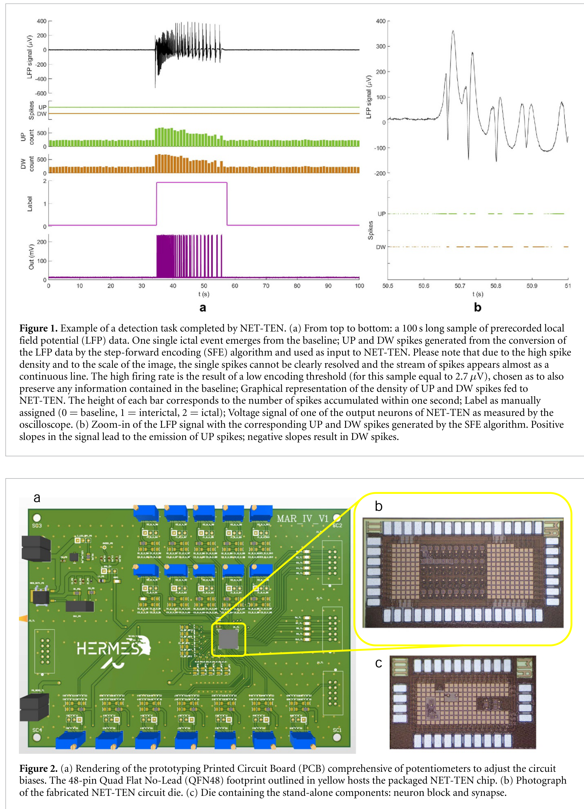
Figura 15 — Estratta da Ronchini et al. (2023), Fig. 1 e Fig. 2: (In alto) Segnale LFP di 100 s con evento ictale, conversione in spike UP e DW tramite algoritmo SFE (soglia $2.7\,\mu\text{V}$), densità di spike su finestre di 1 s, etichetta manuale (0=baseline, 1=interictal, 2=ictal) e risposta in tensione misurata all'oscilloscopio su un neurone di uscita di NET-TEN. (In basso) PCB di prototipazione HERMES con potenziometri a 25 giri per la regolazione fine dei bias e microfotografia dei die CMOS a 180 nm.
Il segnale analogico LFP viene convertito in due flussi binari di eventi (UP e DW) mediante l'algoritmo Step-Forward Encoding (SFE) (equivalente algoritmico di un modulatore delta asincrono ADM): ad ogni campione ($2\,\text{kHz}$), se $S(t) > \text{baseline} + \text{threshold}$ viene emesso uno spike UP e la baseline viene incrementata di $+\text{threshold}$; se $S(t) < \text{baseline} - \text{threshold}$ viene emesso uno spike DW e la baseline viene decrementata di $-\text{threshold}$. La soglia è calibrata in modo che l'OR logico tra UP e DW produca un firing rate medio del $\sim 30\%$ dei time-step ($2.7\,\mu\text{V}$ in Fig. 15). Gli impulsi binari sono convertiti in impulsi fisici di tensione con ampiezza di picco $200\,\text{mV}$ e larghezza a metà altezza (FWHM) di $130\,\mu\text{s}$ (distanza minima inter-impulso $350\,\mu\text{s}$), inviati al chip tramite generatore di forme d'onda Keysight 33600A.
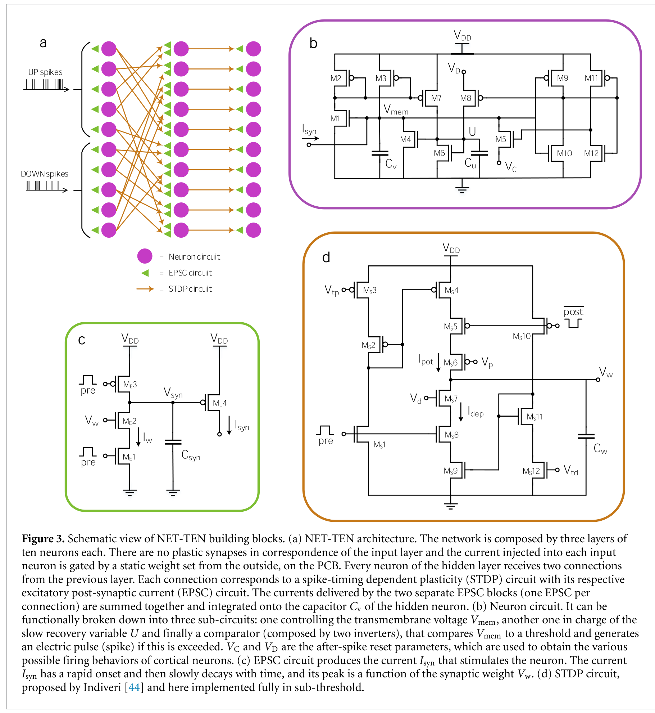
Figura 16 — Estratta da Ronchini et al. (2023), Fig. 3: (a) Architettura feed-forward a 3 strati (10–10–10 neuroni) di NET-TEN con fan-out pari a 2 tra input e hidden layer e connessione 1-a-1 tra hidden e output layer. (b) Circuito CMOS del neurone di Izhikevich ($M_1\text{–}M_{12}, C_v, C_u$). (c) Circuito sinaptico EPSC ($M_{E1}\text{–}M_{E4}, C_{\text{syn}}$). (d) Circuito di plasticità STDP in sottosoglia ($M_{S1}\text{–}M_{S12}, C_w$).
Come mostrato in Figura 16a, l'architettura di NET-TEN è una SNN feed-forward a 3 layer da 10 neuroni ciascuno (30 neuroni di Izhikevich totali):
Una caratteristica ingegneristica fondamentale di NET-TEN è l'assenza totale di una fase di addestramento offline:
Ch6, Ch7, Ch8 e Ch10) si sintonizzino spontaneamente in modo ottimale per rispondere agli eventi epilettiformi.Nelle misure sperimentali sui 10 campioni animali, la risposta grezza del primo spike emesso da NET-TEN mostra una latenza mediana di appena $56.7\,\text{ms}\ [\text{IQR } 79.1\,\text{ms}]$ per gli eventi ictali (media $110.4\,\text{ms}$) e di $138.6\,\text{ms}\ [\text{IQR } 39.2\,\text{ms}]$ per gli eventi interictali (Tabella 3.1).
Tabella 3.1 — Latenza di risposta ictale e interictale (in ms) sui 4 canali informativi di NET-TEN (Ronchini et al., 2023, Table 1)
| Sample | Tipologia Traccia | Ictal Ch6 (ms) | Ictal Ch7 (ms) | Ictal Ch8 (ms) | Ictal Ch10 (ms) | Interictal Ch6 (ms) | Interictal Ch7 (ms) | Interictal Ch8 (ms) | Interictal Ch10 (ms) |
|---|---|---|---|---|---|---|---|---|---|
| 1 | Ictal | 31.4 | 31.2 | 31.6 | 52.9 | — | — | — | — |
| 2 | Ictal + Interictal | 48.1 | 48.1 | 48.4 | 57.5 | $80.1^*$ | $86.1^*$ | $80.4^*$ | $130.8^*$ |
| 3 | Ictal + Interictal | 104.2 | 104.1 | 104.6 | 874.8 | 138.6 | 138.2 | 138.8 | Non rilevato |
| 4 | Artifact | — | — | — | — | — | — | — | — |
| 5 | Ictal + Interictal | 203.1 | 228.3 | 203.8 | 202.9 | 147.8 | 147.5 | 148.2 | 155.6 |
| 6 | Ictal | 178.9 | 201.9 | 179.3 | 178.6 | — | — | — | — |
| 7 | Ictal | 44.1 | 43.8 | 44.3 | 55.9 | — | — | — | — |
| 8 | Ictal | 43.9 | 43.9 | 44.3 | 62.8 | — | — | — | — |
| 9 | Ictal | 41.7 | 26.1 | 49.7 | 38.4 | — | — | — | — |
| 10 | Ictal | 74.5 | 74.0 | 74.7 | 98.7 | — | — | — | — |
| Mediana [IQR] per ch. | 48.1 [60.3] | 48.1 [60.3] | 49.7 [60.3] | 62.8 [122.7] | 138.6 [33.9] | 138.2 [30.7] | 138.8 [33.9] | 143.2 [12.4] | |
| Mediana [IQR] globale | \multicolumn{4}{c | }{\textbf{56.7 [79.1] ms}} | \multicolumn{4}{c}{\textbf{138.6 [39.2] ms}} |
Per isolare esclusivamente le crisi ictali (che durano decine di secondi e generano una mediana di $1117.5$ spike) scartando sia le scariche interictali (brevi, mediana di soli $4.5$ spike) sia gli artefatti elettrici (mediana di $27.5$ spike ma più diluiti all'esordio), gli autori hanno analizzato l'intervallo inter-spike tra il $1^\circ$ e il $3^\circ$ spike ($\text{ISI}_{\text{I}-\text{III}}$) combinato col conteggio degli spike, progettando una logica digitale minimale alimentata a $V_{DD} = 0.3\,\text{V}$ composta da soli due contatori:
In hardware CMOS 180 nm a $0.3\,\text{V}$, questo post-processing richiede un contatore a 8-bit (clockato a $1\,\text{kHz}$ per misurare le finestre di $10\,\text{ms}$ e $190\,\text{ms}$, potenza dinamica di soli $31\,\text{pW}$) e un contatore asincrono a 3-bit (pilotato dagli spike di uscita, che consuma $11.4\,\text{fJ/spike}$, ovvero $11.4\,\text{fJ} \times 13 = \mathbf{148.2\,\text{fJ/classificazione}}$). Con questa logica completa, l'artefatto è rigettato al $100\%$, le scariche interictali sono ignorate e le crisi ictali vengono rilevate al $13^\circ$ spike con un ritardo mediano di soli $229.4\,\text{ms}$ ($0.23\,\text{s}$, pari allo $0.6\%$ della durata media della crisi di $40.45\,\text{s}$), con una potenza totale di sistema di $3.50\,\text{nW} + 31\,\text{pW} = \mathbf{3.53\,\text{nW}}$!
Mentre NET-TEN opera su segnali LFP intracranici, Li et al. (2024) affrontano il monitoraggio continuo indossabile (wearable edge inference) su tracciati EEG da scalpo non invasivi (banda $1\text{–}80\,\text{Hz}$, campionati a $512\,\text{Hz}$ secondo il sistema internazionale 10-20), validando il sistema su due benchmark clinici:
Prima della codifica in spike, il segnale EEG subisce un pre-processing off-chip composto da: ri-riferimento alla media comune (Common Average Reference), filtro passa-banda $1\text{–}80\,\text{Hz}$, filtro Notch a $50\,\text{Hz}$, e Analisi delle Componenti Indipendenti (ICA) per rimuovere artefatti oculari (EOG), cardiaci (ECG), muscolari (EMG) e da movimento (Figura 18). Il segnale pulito (segmentato in finestre di $5\,\text{s}$) viene convertito da un codificatore Sigma-Delta ($\Sigma\Delta$) (Corradi & Indiveri, 2015) in due serie temporali di spike per canale (UP e DOWN).
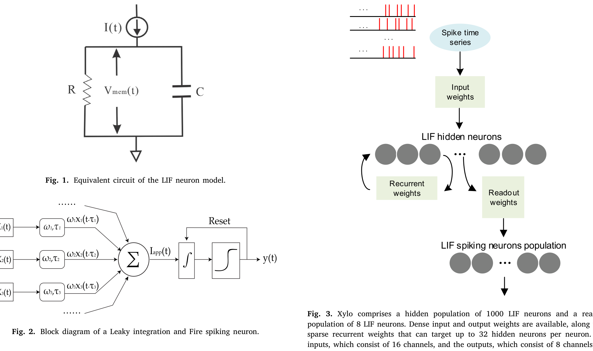
Figura 17 — Estratta da Li et al. (2024), Fig. 1, 2 e 3: (A sinistra) Circuito elettrico equivalente RC parallelo e schema a blocchi funzionale del neurone LIF. (A destra) Architettura logica dell'ASIC neuromorfico digitale SynSense Xylo (28 nm CMOS), comprendente fino a 16 canali di ingresso, una popolazione nascosta di 1000 neuroni LIF digitali con pesi ricorrenti sparsi (max 32 target/neurone) e una popolazione di readout di 8 neuroni LIF.
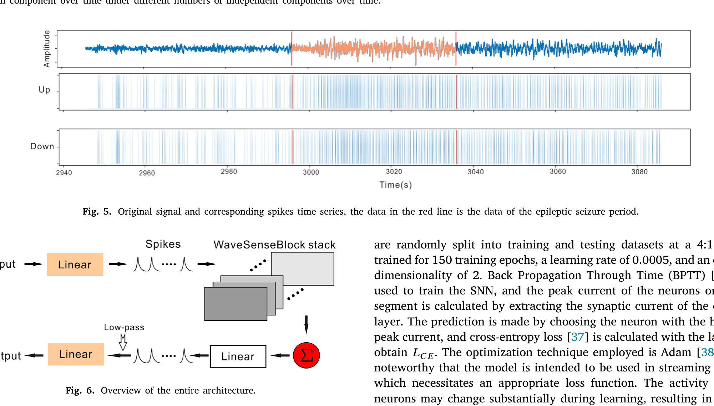
Figura 18 — Estratta da Li et al. (2024), Fig. 5 e Fig. 6: (In alto) Tracciato EEG originale (con periodo ictale evidenziato in rosso) e corrispondenti serie temporali di spike UP e DOWN generate dal codificatore Sigma-Delta. (In basso) Architettura complessiva della SNN WaveSense basata su blocchi convoluzionali temporali dilatati impilati.
La rete SNN adottata è WaveSense (ispirata a WaveNet), una rete feed-forward composta da blocchi impilati di convoluzioni temporali dilatate (dilated temporal convolutions), realizzate nelle SNN sfruttando proiezioni sinaptiche multiple con diverse costanti di tempo di decadimento. Il modello implementato è estremamente compatto: soli $2.400$ pesi ($2.4\text{K}$) totali, 16 neuroni nello strato di readout nascosto, 2 sinapsi nello strato dilatato, costante di tempo di membrana $\tau_{\text{mem}} = 2\,\text{ms}$ ($0.002\,\text{s}$), soglia $V_{\text{th}} = 0.6$ e 2 neuroni di uscita (ictale vs interictale).
L'addestramento avviene off-chip tramite BPTT (Backpropagation Through Time) con surrogate gradient (ottimizzatore Adam, learning rate $0.0005$, 150 epoche). Per minimizzare il consumo energetico una volta mappata la rete su hardware, alla funzione di costo Cross-Entropy ($L_{\text{CE}}$, calcolata sulla corrente sinaptica di picco dei neuroni di uscita) viene sommato un termine di regolarizzazione dell'attività di firing:
dove $N_i^t$ è il numero di spike emessi dal neurone $i$ nel time-bin $t$, $l$ è la soglia massima tollerata di spike e $\Theta(\cdot)$ è il gradino di Heaviside: qualsiasi attività di firing eccedente $l$ viene penalizzata quadraticamente durante il training. Tramite il framework Rockpool, i pesi in virgola mobile vengono poi quantizzati e scalati a interi a 8-bit ($\pm 128$) e caricati sull'ASIC SynSense Xylo:
In modalità streaming (passo decisionale di $0.5\,\text{s}$, con filtro anti-falso allarme che conferma l'allarme dopo 4 predizioni consecutive concordi):
Durante una crisi epilettica focale registrata con elettrodi intracranici (iEEG), le popolazioni neurali della zona epilettogena non passano istantaneamente a una sincronia globale perfetta, ma attraversano stati di sincronizzazione parziale locale (stati Chimera) caratterizzati da cluster spaziali di canali adiacenti fortemente correlati. Bartels et al. (2025) dimostrano come una SNN implementata sui circuiti analogici in sottosoglia del processore multicore DYNAP-SE2 (180 nm CMOS, 4 core da 256 neuroni AdEx = 1024 neuroni, $V_{DD} = 1.8\,\text{V}$, Figura 21) possa agire da trasformatore non lineare per amplificare selettivamente queste correlazioni spazio-temporali.
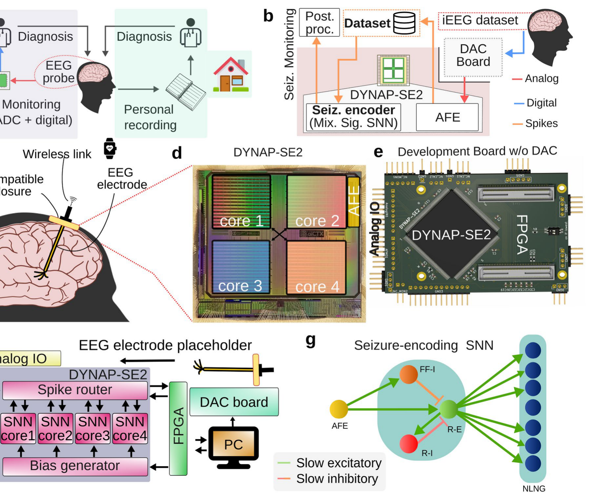
Figura 21 — Estratta da Bartels et al. (2025), Fig. 1: (a) Approccio convenzionale ospedaliero vs diario paziente. (b, c) Sistema proposto basato su processore mixed-signal DYNAP-SE2 con AFE/ADM integrato e core SNN per dispositivi impiantabili/indossabili. (d, e) Fotografia del die DYNAP-SE2 (4 core SNN + AFE) e scheda di sviluppo con FPGA. (f, g) Diagramma a blocchi del setup sperimentale con scheda DAC a 18 bit e architettura della SNN a due strati (Translation Layer FF-I / R-E / R-I + NLNG Layer).
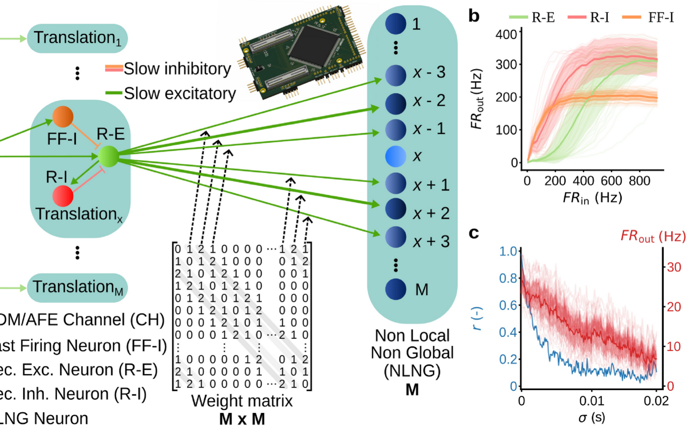
Figura 22 — Estratta da Bartels et al. (2025), Fig. 3: (a) Architettura dettagliata della SNN on-chip: per ciascuno degli $M$ canali ADM, un Translation Layer con 3 neuroni (FF-I, R-E, R-I) realizza un filtro passa-banda di firing rate, seguito dal layer Non-Local Non-Global (NLNG) con matrice di connettività spaziale 1-2-1-0-1-2-1. (b) Curva di trasferimento $FR_{\text{out}}$ vs $FR_{\text{in}}$ misurata sul chip che dimostra l'azione passa-banda (200–600 Hz) del neurone R-E. (c) Correlazione di Pearson e risposta del layer NLNG al variare del jitter temporale $\sigma$.
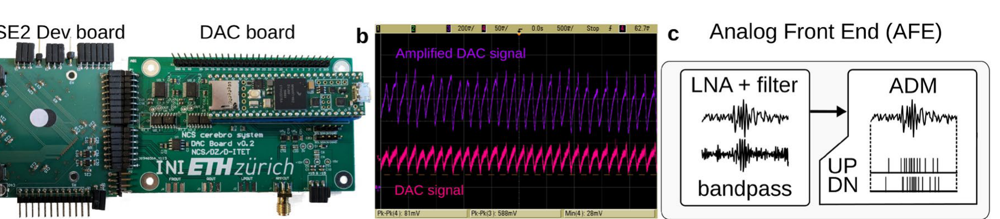
Figura 23 — Estratta da Bartels et al. (2025), Fig. 6: Schede hardware (DYNAP-SE2 dev board + DAC board AD5781 a 18 bit con Teensy 4.1), tracce all'oscilloscopio del segnale iEEG rigenerato ($\sim 100\,\text{mV}_{\text{pp}}$) e amplificato dall'LNA di +20 dB, e schema a blocchi dell'Analog Front-End (LNA + filtro passa-banda + Asynchronous Delta Modulator UP/DN).
Lo studio utilizza il database clinico SWEC-ETHZ iEEG (Inselspital Berna, campionato a $512\,\text{Hz}$, banda $0.5\text{–}150\,\text{Hz}$), analizzando 10 crisi in 5 pazienti con epilessia del lobo temporale (TLE) o parietale (PLE) aventi un numero di canali $M \in \{42, 47, 56, 59, 62\}$ ($M < 64$ per rispettare il fan-in massimo di 64 sinapsi CAM per neurone di DYNAP-SE2). I tracciati digitali vengono riconvertiti in segnali fisici analogici da un DAC a 18-bit (AD5781) e inviati all'AFE integrato sul die DYNAP-SE2 (Figura 23), composto da un LNA con guadagno di $20\,\text{dB}$ seguito da un Asynchronous Delta Modulator (ADM) che codifica in hardware gli eventi UP e DN.
Per un paziente con $M$ canali iEEG, vengono allocati $4M$ neuroni AdEx distribuiti su 3 core fisici distinti (poiché i generatori di correnti di bias Coarse/Fine sono condivisi all'interno di ciascun core, Tabella 3.2):
Per ciascun canale $x \in \{1..M\}$ sono istanziati 3 neuroni connessi con sinapsi DPI lente eccitatorie (NMDA-like) e inibitorie ($\text{GABA}_B$-like):
Ottenuto tramite Evolutionary Neural Architecture Search (ENAS), connette il neurone R-E del canale $x$ ai 6 neuroni NLNG vicini ($x-3, x-2, x-1$ e $x+1, x+2, x+3$) con molteplicità di pesi sinaptici 1 - 2 - 1 - 0 - 1 - 2 - 1 (peso nullo sul canale $x$ stesso!).
Tabella 3.2 — Parametri $(C, F)$ del Bias Generator e correnti sottosoglia nei 3 core di DYNAP-SE2 (Bartels et al., 2025, Tables 3 & 4)
| Parametro Sinaptico | Formato / Unità | Core 1: R-E / R-I (exc. / inh.) | Core 2: FF-I | Core 3: NLNG |
|---|---|---|---|---|
| Costante di tempo ($\tau_{\text{syn}}$) | Coarse/Fine $(C, F)$ | $(1, 20)\ /\ (1, 30)$ | $(2, 20)$ | $(1, 12)$ |
| Corrente $I_\tau$ | $\text{nA}$ | $0.628\ /\ 0.667\,\text{nA}$ | $4.528\,\text{nA}$ | $0.597\,\text{nA}$ |
| Guadagno DPI ($I_{\text{gain}}$) | Coarse/Fine $(C, F)$ | $(2, 100)\ /\ (2, 100)$ | $(3, 100)$ | $(2, 100)$ |
| Corrente $I_{\text{gain}}$ | $\text{nA}$ | $4.84\ /\ 4.84\,\text{nA}$ | $35.39\,\text{nA}$ | $4.84\,\text{nA}$ |
| Peso Sinaptico ($I_w$) | Coarse/Fine $(C, F)$ | $(3, 128)\ /\ 2\times(3, 128)$ | $(3, 128)$ | $(3, 128)$ |
| Corrente $I_w$ | $\text{nA}$ | $35.5\ /\ 71.0\,\text{nA}$ | $35.5\,\text{nA}$ | $35.5\,\text{nA}$ |
(Valori di corrente Coarse $I_p(C_p)$: $C_0 = 0.07\,\text{nA}$, $C_1 = 0.55\,\text{nA}$, $C_2 = 4.45\,\text{nA}$, $C_3 = 35\,\text{nA}$, $C_4 = 280\,\text{nA}$, $C_5 = 2250\,\text{nA}$, con legge $I = I_p(C_p) \cdot \frac{F_p}{256}$).
Grazie alla trasformazione eseguita dalla SNN sul chip, la classificazione LSVM migliora significativamente rispetto all'uso diretto degli eventi ADM:
Dal punto di vista energetico (Tabella 3.3), il consumo dinamico medio dell'intera SNN sui 5 pazienti (media $53.2$ canali) è pari a $149.96\,\mu\text{W}$ ($2.80\,\mu\text{W/canale}$), scendendo fino a $1.77\,\mu\text{W}$ totali ($0.03\,\mu\text{W/canale}$) durante il periodo pre-ictale quiescente del Paziente 2!
Tabella 3.3 — Consumo di potenza della SNN su DYNAP-SE2 ($V_{DD}=1.8\,\text{V}$) attraverso le fasi cliniche (Bartels et al., 2025, Table 5 & 6)
| Paziente (SWEC ID, Età, Epilessia) | Canali ($M$) | Crisi (Durata s) | Pre-ictal ($\mu\text{W}$) | Seiz-1ª metà ($\mu\text{W}$) | Seiz-2ª metà ($\mu\text{W}$) | Post-ictal ($\mu\text{W}$) | Potenza Totale ($\mu\text{W}$) | Potenza / Canale ($\mu\text{W/ch}$) |
|---|---|---|---|---|---|---|---|---|
| Pat 1 (ID2, 19a, TLE) | 42 | Seiz-1 (96 s) | 14.55 | 35.95 | 66.39 | 11.60 | 128.50 | 3.06 |
| Pat 1 (ID2, 19a, TLE) | 42 | Seiz-2 (260 s) | 3.81 | 62.69 | 30.80 | — | 97.29 | 2.32 |
| Pat 2 (ID9, 27a, TLE) | 56 | Seiz-1 (104 s) | 1.77 | 25.50 | 32.28 | 7.02 | 66.56 | 1.19 |
| Pat 2 (ID9, 27a, TLE) | 56 | Seiz-2 (118 s) | 2.78 | 44.50 | 35.99 | 3.17 | 86.45 | 1.54 |
| Pat 3 (ID1, 24a, TLE) | 47 | Seiz-1 (125 s) | 65.67 | 68.34 | 53.96 | 58.58 | 246.55 | 5.24 |
| Pat 3 (ID1, 24a, TLE) | 47 | Seiz-2 (70 s) | 49.89 | 64.99 | 43.40 | 47.02 | 205.30 | 4.37 |
| Pat 4 (ID16, 31a, TLE) | 59 | Seiz-1 (81 s) | 5.68 | 52.73 | 31.37 | 1.25 | 91.03 | 1.54 |
| Pat 4 (ID16, 31a, TLE) | 59 | Seiz-2 (67 s) | 1.95 | 24.48 | 37.98 | 12.74 | 77.14 | 1.31 |
| Pat 5 (ID4, 32a, PLE) | 62 | Seiz-1 (160 s) | 108.25 | 64.65 | 65.83 | 58.33 | 297.06 | 4.80 |
| Pat 5 (ID4, 32a, PLE) | 62 | Seiz-2 (127 s) | 54.69 | 52.99 | 42.47 | 53.54 | 203.69 | 3.28 |
| MEDIA GLOBALE | 53.2 | — | — | — | — | — | 149.96 ($\sim 150\,\mu\text{W}$) | 2.80 $\mu\text{W/ch}$ |
Mentre i lavori precedenti si concentrano sull'elaborazione di segnali a bassa frequenza (EEG/iEEG/LFP, $<150\text{–}1000\,\text{Hz}$), NeuroSEED (Wu et al., 2026) realizza un System-on-Chip (SoC) impiantabile completo a 32 canali in tecnologia TSMC 40 nm CMOS ($V_{DD} = 1.2\,\text{V} / 0.6\,\text{V}$, area totale del die $857\,\mu\text{m} \times 820\,\mu\text{m} = \mathbf{0.70\,\text{mm}^2}$, area attiva $0.16\,\text{mm}^2$) progettato per acquisire, comprimere di oltre $500\times$ e trasmettere via radio potenziali d'azione extracellulari (Neural Action Potentials / Spikes, banda fino a $5.2\,\text{kHz}$ per canale) (Figura 25).
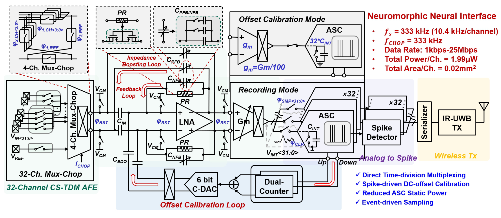
Figura 25 — Estratta da Wu et al. (2026), Fig. 3: Architettura completa del SoC NeuroSEED a 32 canali: front-end analogico a Time-Division Multiplexing diretto (32-Ch Mux-Chop + CCIA LNA + integratore Gm-C con Windowed Integration Sampling e loop digitale di calibrazione dell'offset DC a 6-bit C-DAC), 32 convertitori Analog-to-Spike (ASC), 32 rivelatori di spike Integrate-and-Fire clockless e trasmettitore wireless impulsivo IR-UWB.
Il sistema risolve i tre colli di bottiglia storici delle interfacce neurali multicanale impiantabili attraverso quattro blocchi co-progettati:
Anziché replicare 32 amplificatori LNA (che occuperebbero troppa area), i 32 elettrodi sono divisi in 8 gruppi collegati a un 4-Ch Mux-Chop che campiona ciascun canale a $f_{\text{ch}} = 10.4\,\text{kHz}$, portando la frequenza complessiva di multiplexing e di chopping a $f_s = f_{\text{CHOP}} = 32 \times 10.4\,\text{kHz} = \mathbf{333\,\text{kHz}}$ (tempo di settling per canale $T_s = 3\,\mu\text{s}$). Per garantire un errore di settling $\epsilon \le 0.1\%$ (10 bit), la banda dell'LNA deve soddisfare $f_{\text{BW}} \ge \frac{-\ln \epsilon}{2\pi T_s} \approx 0.37\,\text{MHz}$ ed è fissata a $700\,\text{kHz}$ (ottenendo un matched spike ratio $>93\%$ sul dataset simulato di Quiroga et al.).
Il guadagno ad anello chiuso è programmabile tramite il rapporto capacitivo $C_{\text{IN}} / C_{\text{NFB}} = \mathbf{7.3\,\text{pF}} / (\mathbf{147\,\text{fF}} \times \{1, 4, 8\})$ (guadagno complessivo AFE misurato: $41.2, 45.3, 47.1, 58.3\,\text{dB}$), con condensatore di feedback positivo $C_{\text{PFB}} = C_{\text{NFB}}$ (Impedance Boosting Loop). Il core LNA adotta una topologia inverter-based current-reuse in cui le coppie differenziali complementari PMOS e NMOS condividono la stessa corrente di polarizzazione e operano in debole inversione ($g_m / I_D \approx 26$) con transistor thick-oxide, raddoppiando la transconduttanza efficace e raggiungendo un Noise Efficiency Factor ($\text{NEF}$) di appena $2.1$ e un rumore riferito all'ingresso (IRN) di $2.9\,\mu\text{V}_{\text{rms}}$ ($1\,\text{Hz}\text{–}1\,\text{kHz}$, densità media $91\,\text{nV}/\sqrt{\text{Hz}}$).
Durante il demultiplexing verso i 32 canali, integra il segnale sui condensatori $C_{\text{INT}}$ producendo una funzione di trasferimento $\text{sinc}$ ($\text{sinc}^2$ in potenza) i cui zeri (notch profondi) cadono esattamente ai multipli interi di $1/T_{\text{SMP}} = f_{\text{CHOP}} = 333\,\text{kHz}$, abbattendo il ripple di chopping e il rumore fuori banda prima del campionamento. L'equazione di decomposizione del rumore totale all'ingresso del CCIA è:
dove il rumore termico dell'LNA inverter-based scala come $\frac{8kT}{3g_m} f_{\text{BW,AFE}}$ e il condensatore $C_{\text{IN}} = 7.3\,\text{pF}$ fissa un bassissimo pavimento di rumore $kT/C$ sugli switch del multiplexer.
In un sistema TDM, l'offset elettrochimico tra elettrodi diversi ($\pm 50\,\text{mV}$) si presenta come un'onda a gradini a $333\,\text{kHz}$ che saturerebbe l'LNA. Ogni $4.8\,\text{s}$ (per $0.96\,\text{ms}$), il transconduttore $G_m$ viene commutato in modalità a bassa transconduttanza ($g_m = G_m / 100$) e tutti i 32 condensatori $C_{\text{INT}}$ vengono connessi in parallelo, aumentando la costante di tempo $\tau = C_{\text{eff}} / g_m$ di un fattore $\sim 3200\times$ per isolare il puro offset DC. L'ASC converte questa deriva in impulsi UP/DN accumulati da un Dual-Counter a 6-bit che pilota un C-DAC capacitivo a 6-bit ($C_{\text{EDO}}$) in retroazione negativa all'ingresso dell'LNA, riducendo l'errore di quantizzazione a $\le 0.78\,\text{mV}$ (residuo di caso peggiore $<16.4\,\text{mV}$, ben entro il margine di saturazione di $\pm 25\,\text{mV}$ a $58.3\,\text{dB}$).
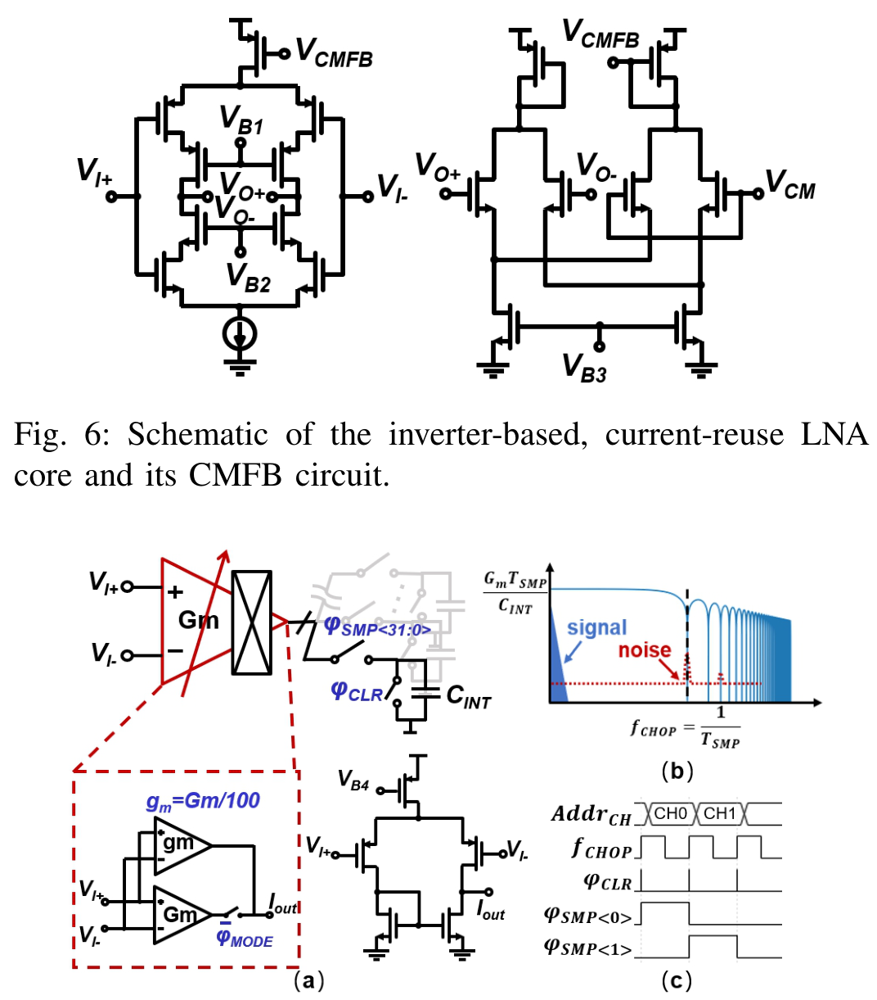
Figura 26 — Estratta da Wu et al. (2026), Fig. 6 e Fig. 7: (In alto) Schematico a livello transistor del core LNA inverter-based current-reuse e del relativo circuito CMFB. (In basso) Stadio integratore charge-sampling $G_m\text{–}C$ con transconduttore dual-mode ($g_m = G_m/100$), risposta in frequenza sinc con notch a $f_{\text{CHOP}}$ e diagramma temporale.
Come illustrato nelle Figure 27 e 28, ciascuno dei 32 canali demultiplexati comprende:
UP/DN dell'ASC. Un rivelatore di picchi e valli a flip-flop D (Figura 28d) individua un minimo locale (Valley), abilitando un contatore digitale che integra gli impulsi UP successivi. Se l'escursione relativa valle-picco supera la soglia programmabile UP_threshold prima del reset al picco (Peak), il neurone digitale Integrate-and-Fire dichiara uno Spike Rilevato (Fire), portando la compressione dati totale a $>500\times$ ed eliminando qualsiasi sensibilità al baseline wander o all'offset residuo (validato su registrazioni in-vivo da radice dorsale L5 di ratto).En di soli $3.2\,\text{ns}$ che accende un oscillatore LC complementare current-reuse a $4.25\,\text{GHz}$ (banda $510\,\text{MHz}$) e un Digital Power Amplifier (DPA) inverter-based ($110\,\text{mV}_{\text{pp}}$ su $50\,\Omega$, $\text{PSD} = -42.05\,\text{dBm/MHz}$ conforme alla maschera FCC, $\text{BER} = 10^{-3}$ a $100\,\text{Mbps}$ attraverso $1.5\,\text{cm}$ di tessuto cranico + $3\,\text{cm}$ in aria).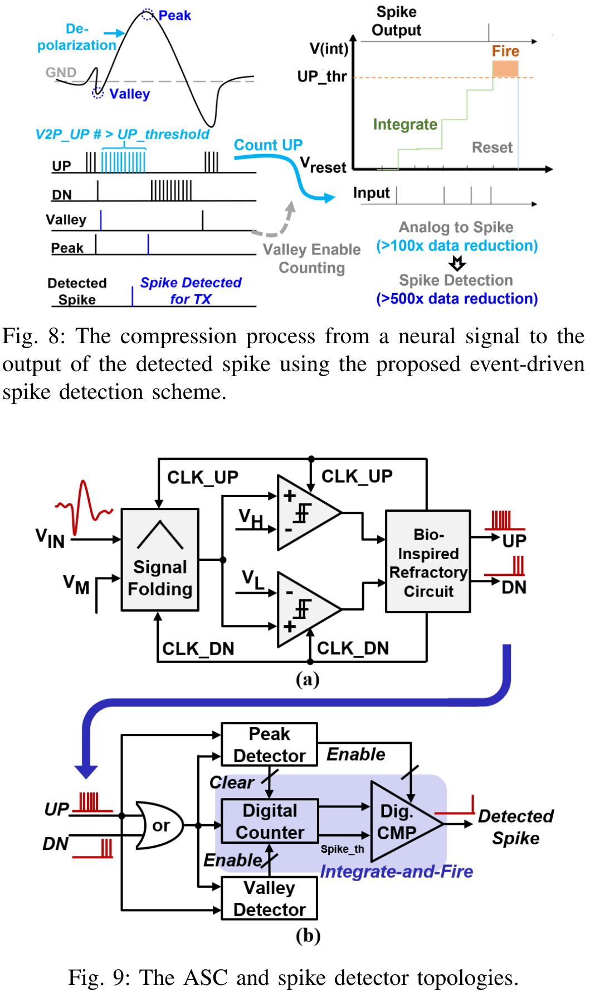
Figura 27 — Estratta da Wu et al. (2026), Fig. 8 e Fig. 9: Processo di compressione event-driven ($>100\times$ dopo ASC, $>500\times$ dopo Spike Detection) e schemi a blocchi dell'ASC core (Signal Folding, comparatori $V_H/V_L$, circuito refrattario bio-ispirato) e dello Spike Detector clockless Valley-to-Peak.
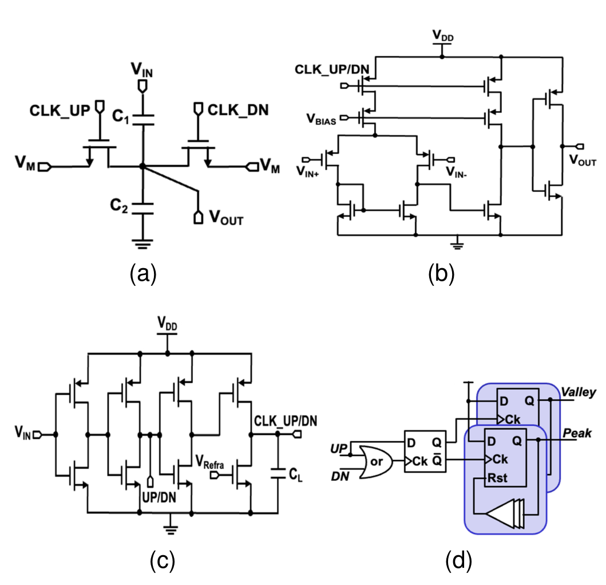
Figura 28 — Estratta da Wu et al. (2026), Fig. 10: Schemi circuitali di: (a) circuito di signal folding SC-DAC a 1-bit ($C_1, C_2 = 6\,\text{pF}$), (b) comparatore asincrono a 3 stadi con power-gating, (c) circuito refrattario riconfigurabile ($V_{\text{Refra}}, C_L$), (d) rivelatore digitale asincrono di picco e valle.
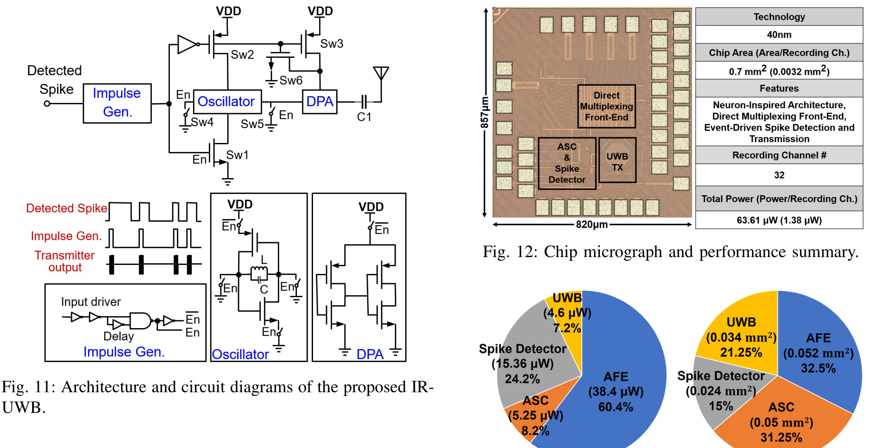
Figura 29 — Estratta da Wu et al. (2026), Fig. 11, 12 e 13: (A sinistra) Architettura e schemi transistor-level del trasmettitore wireless IR-UWB (Impulse Generator da 3.2 ns, oscillatore LC current-reuse e DPA). (In alto a destra) Micrografia del chip in TSMC 40 nm CMOS ($857\times 820\,\mu\text{m}$) e riepilogo prestazioni. (In basso a destra) Ripartizione percentuale della potenza totale ($63.61\,\mu\text{W}$, $1.99\,\mu\text{W/ch}$) e dell'area attiva ($0.16\,\text{mm}^2$) tra AFE, ASC, Spike Detector e UWB TX.
Questo capitolo risponde in modo sistematico e analitico alla seconda domanda fondamentale della consegna: Come si realizza fisicamente un neurone spiking (e una rete sinaptica) in tecnologia CMOS? Quali sono i blocchi circuitali fondamentali, le equazioni fisiche a livello transistor e le architetture proposte nella letteratura?
L'intuizione fondante dell'ingegneria neuromorfica analogica (Mead, 1989; Indiveri et al., 2011) risiede nell'omologia fisica diretta tra il trasporto ionico attraverso le membrane biologiche e il trasporto elettronico in un transistor MOSFET polarizzato in inversione debole (sottosoglia), ovvero con tensione gate-source inferiore alla tensione di soglia ($V_{GS} < V_T$):
Per un transistor nMOS riferito al substrato (bulk), la corrente di drain $I_D$ in regime di sottosoglia vale:
dove:
Non appena la tensione drain-source supera appena 4 volte la tensione termica ($V_{DS} = V_D - V_S > 4 U_T \approx 100\,\text{mV}$), il termine $\exp(-V_{DS}/U_T)$ diventa $< 0.018 \ll 1$ e il transistor entra in saturazione, comportandosi come un generatore di corrente ideale controllato esponenzialmente da $V_G$ e $V_S$:
(Questa proprietà spiega perché il chip NET-TEN riesce a funzionare perfettamente con un'alimentazione totale di appena $V_{DD} = 250\,\text{mV}$!).
Derivando $I_D$ rispetto a $V_G$, la transconduttanza in sottosoglia è lineare con la corrente di polarizzazione:
Operando con correnti comprese tra $100\,\text{fA}$ e $10\,\text{nA}$, la conduttanza equivalente $g_m$ risulta estremamente piccola ($10^{-12}\text{–}10^{-7}\,\text{S}$, corrispondente a resistenze di $10\,\text{M}\Omega\text{–}1\,\text{T}\Omega$). Di conseguenza, accoppiando tali transistor a piccoli condensatori integrati su silicio ($C \approx 100\,\text{fF} \text{ – } 1\,\text{pF}$), si ottengono direttamente costanti di tempo fisiche $\tau = \frac{C}{g_m} = \frac{C U_T}{\kappa I_D}$ comprese tra $0.1\,\text{ms}$ e $1\,\text{s}$, identiche a quelle dei neuroni e dei recettori sinaptici biologici (AMPA, NMDA, $\text{GABA}_A$, $\text{GABA}_B$) senza ricorrere ad alcun clock digitale!
La dinamica temporale del primo ordine di una conduttanza sinaptica o di una membrana passiva (Destexhe et al., 1998; Indiveri et al., 2011, Sez. 3.1) è espressa dall'equazione differenziale lineare:
Nei circuiti current-mode log-domain (Frey, 1993; Tomazou et al., 1990), la variabile di stato fisica $y$ è rappresentata da una corrente in sottosoglia $I_{\text{syn}}$ (o $I_{\text{mem}}$), mentre la tensione $V_{\text{syn}}$ sul nodo capacitivo $C_{\text{syn}}$ è una compressione logaritmica della corrente ($V_{\text{syn}} \propto \frac{U_T}{\kappa} \ln(I_{\text{syn}}/I_0)$). Sfruttando il principio translineare di Gilbert (1975) (secondo cui lungo un anello chiuso di giunzioni esponenziali la somma delle tensioni gate-source in senso orario uguaglia quella in senso antiorario, il che equivale all'uguaglianza dei prodotti delle correnti nei rami pari e dispari), un'equazione differenziale non lineare nella tensione $V_{\text{syn}}$ su $C_{\text{syn}}$ si trasforma esattamente in un'equazione differenziale lineare nella corrente di uscita $I_{\text{syn}}$.
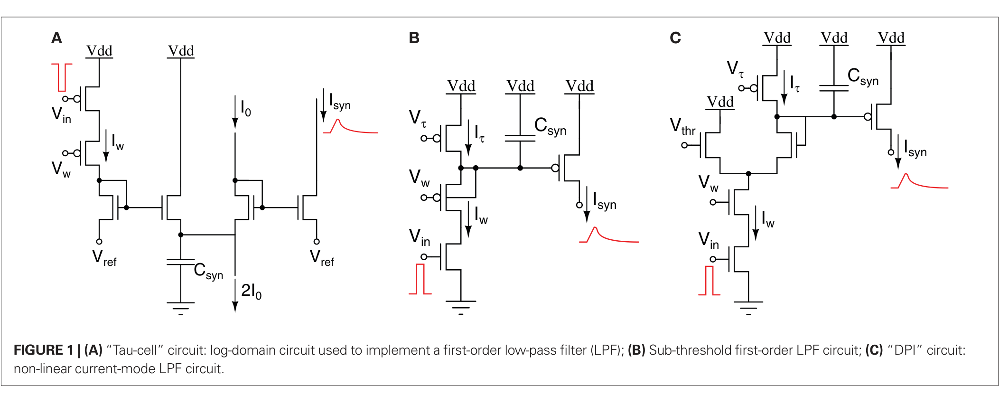
Figura 1 — Estratta da Indiveri et al. (2011), Fig. 1: Confronto tra i tre circuiti log-domain passa-basso (LPF) del primo ordine per l'integrazione temporale di impulsi di tensione (spike): (A) Circuito "Tau-Cell"; (B) Filtro LPF del primo ordine in sottosoglia (Arthur & Boahen); (C) Circuito "DPI" (Differential Pair Integrator, Bartolozzi & Indiveri, 2007).
Come illustrato in Figura 1, l'evoluzione di questi integratori comprende tre topologie:
Utilizza un anello translineare completo con tensione di riferimento $V_{\text{ref}}$ e generatori di corrente $I_0$ e $2I_0$ che fissano la costante di tempo $\tau$ sulla capacità $C_{\text{syn}}$, mentre l'impulso pre-sinaptico $V_{\text{in}}$ modula una corrente $I_w$ (controllata da $V_w$) per generare la corrente post-sinaptica $I_{\text{syn}}$.
Riduce il circuito a 4 transistor e una capacità $C_{\text{syn}}$ riferita a $V_{dd}$. All'arrivo di uno spike negativo su $V_{\text{in}}$, il ramo di ingresso estrae da $C_{\text{syn}}$ una corrente di peso $I_w$ (fissata dal bias $V_w$), abbassando la tensione sul condensatore e facendo crescere esponenzialmente la corrente di uscita $I_{\text{syn}}$ del pFET di destra. Al termine dello spike, il transistor di leak polarizzato da $V_\tau$ (corrente $I_\tau$) ricarica linearmente $C_{\text{syn}}$ verso $V_{dd}$, producendo un decadimento esponenziale di $I_{\text{syn}}$ nel tempo. Tuttavia, in questa topologia l'ampiezza massima raggiungibile da $I_{\text{syn}}$ dipende simultaneamente sia da $V_w$ sia da $V_\tau$.
Sostituisce il singolo transistor di iniezione con una coppia differenziale nMOS operante in configurazione di retroazione negativa: un ramo della coppia differenziale ha il gate polarizzato da una tensione di soglia accordabile $V_{\text{thr}}$, mentre l'altro ramo ha il gate collegato al nodo capacitivo $V_{\text{syn}}$ (e il drain collegato anch'esso a $C_{\text{syn}}$). La corrente di coda (tail current) della coppia è pari a $I_w = I_0 e^{\kappa V_w / U_T}$ durante lo spike $V_{\text{in}}$.
Detta $V_{\text{syn}}$ la tensione sul condensatore $C_{\text{syn}}$, la corrente di uscita del pMOS di lettura (col source a $V_{dd}$) vale:
Per la legge di Kirchhoff sul condensatore $C_{\text{syn}}$, si ha $C_{\text{syn}} \frac{dV_{\text{syn}}}{dt} = I_\tau - I_{\text{dp}}$, dove $I_\tau$ è la corrente di carica di leak e $I_{\text{dp}}$ è la corrente del ramo destro della coppia differenziale:
Sostituendo $\frac{dV_{\text{syn}}}{dt}$ nell'espressione di $\frac{dI_{\text{syn}}}{dt}$ e definendo la costante di tempo $\tau \triangleq \dfrac{C_{\text{syn}} U_T}{\kappa I_\tau}$, si ottiene l'equazione esatta del circuito DPI:
Nel regime operativo lineare in cui $I_{\text{syn}} \ll I_{\text{thr}}$ (oppure $I_{\text{syn}} \gg I_{\text{thr}}$ con guadagno virtuale $I_{\text{thr}}/I_\tau$), l'equazione si riduce a un filtro passa-basso lineare del primo ordine nel dominio delle correnti il cui guadagno di trasferimento può essere modulato indipendentemente dalla costante di tempo $\tau$ tramite il terzo parametro di controllo $V_{\text{thr}}$ (utilizzato per l'omeostasi sinaptica e la plasticità intrinseca).
Come sintetizzato nella Tabella 1 di Indiveri et al. (2011), qualsiasi neurone spiking integrato su silicio (Silicon Neuron, SiN) è scomponibile in quattro blocchi computazionali fondamentali:
Analizziamo ora nel dettaglio transistor-per-transistor ciascuna delle architetture circuitali fondamentali presentate in Indiveri et al. (2011).
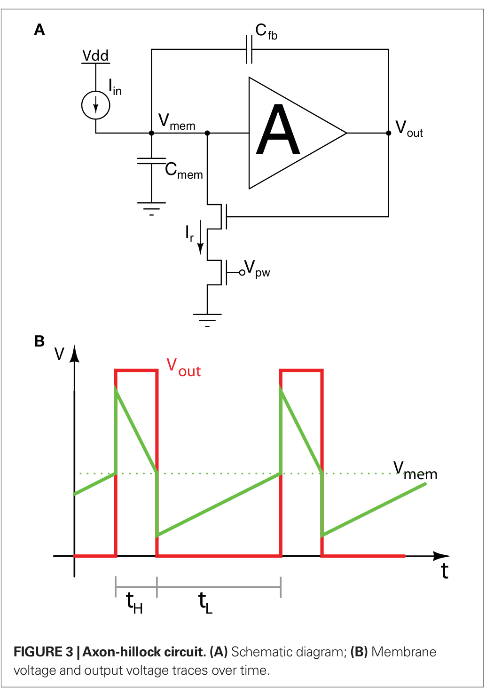
Figura 2 — Estratta da Indiveri et al. (2011), Fig. 3: Circuito Axon-Hillock (Mead, 1989). (A) Schema elettrico con capacità di membrana $C_{\text{mem}}$, amplificatore non invertente $A$ (due inverter CMOS in cascata), capacità di retroazione positiva $C_{\text{fb}}$ e ramo nMOS di reset con corrente $I_r(V_{\text{pw}})$. (B) Tracce temporali di $V_{\text{mem}}$ (verde) e $V_{\text{out}}$ (rosso).
Il circuito Axon-Hillock (Figura 2) è il capostipite storico dei neuroni neuromorfici:
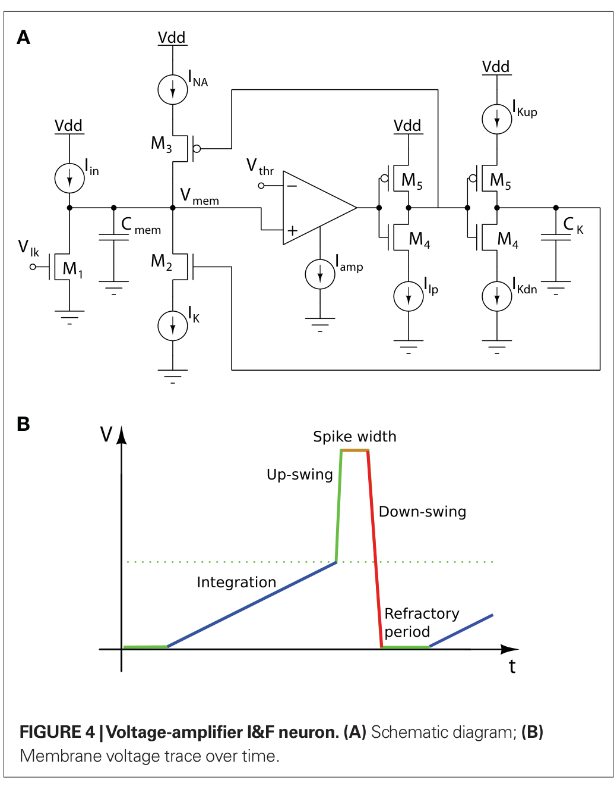
Figura 3 — Estratta da Indiveri et al. (2011), Fig. 4: Neurone I&F basato su amplificatore di tensione (van Schaik, 2001). (A) Schema elettrico con leak $M_1(V_{\text{lk}})$, comparatore OTA a 5 transistor ($V_{\text{thr}}, I_{\text{amp}}$), correnti $I_{\text{Na}}$ ($M_3$) e $I_{\text{K}}$ ($M_2$) e due starved inverters ($M_4, M_5$) con capacità del potassio $C_K$. (B) Fasi dell'azione potenziale: Integration, Up-swing, Spike width, Down-swing e Refractory period.
Per ottenere un controllo esplicito e indipendente della soglia di sparo $V_{\text{thr}}$, della larghezza dello spike e del periodo refrattario, van Schaik (2001) ha proposto il circuito di Figura 3:
Contemporaneamente, l'uscita bassa del primo inverter pilota un secondo starved inverter ($M_5$ pMOS limitato dalla corrente $I_{\text{Kup}}$, $M_4$ nMOS limitato dalla corrente $I_{\text{Kdn}}$) che carica la capacità del potassio $C_K$ con rampa proporzionale a $I_{\text{Kup}}$:
Indiveri et al. (2011) analizzano quattro implementazioni di modelli biofisici basati su conduttanza:
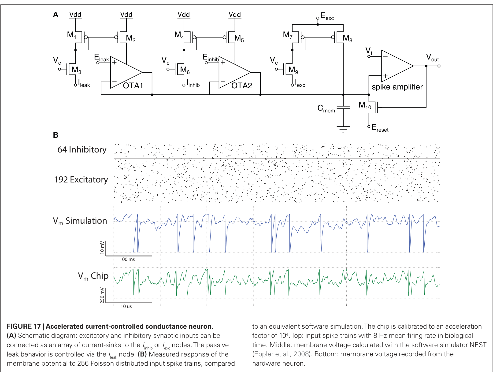
Figura 8 — Estratta da Indiveri et al. (2011), Fig. 17: Neurone a conduttanza a tempo accelerato ($\times 10^4$, Schemmel et al., 2006) parte di un chip da 100k sinapsi. (A) Schema elettrico con specchi di corrente pMOS, cascode nMOS $M_3, M_6, M_9$, amplificatori OTA1 (leak verso $E_{\text{leak}}$) e OTA2 (inibizione verso $E_{\text{inhib}}$), specchio veloce $M_7\text{–}M_8$ per l'eccitazione ($E_{\text{exc}}$) e comparatore di spike con switch di reset $M_{10}$ ($E_{\text{reset}}$). (B) Confronto tra la traccia misurata sul chip ($10\,\mu\text{s/div}$) e la simulazione numerica sul simulatore software NEST ($100\,\text{ms/div}$).
Come mostrato in Figura 8, questo circuito opera in forte inversione (strong inversion) comprimendo il tempo biologico di un fattore $10^4\text{–}10^5$ ($1\,\text{ms}$ biologico $\to 10\,\text{ns}$ su silicio): i nodi di somma delle correnti sinaptiche ($I_{\text{leak}}, I_{\text{inhib}}, I_{\text{exc}}$) sono mantenuti a bassa impedenza dai transistor cascode $M_3, M_6, M_9$ (polarizzati da $V_c$). Le conduttanze di leak e inibitoria sono realizzate da due amplificatori a transconduttanza (OTA1 e OTA2) verso i potenziali di inversione $E_{\text{leak}}$ ed $E_{\text{inhib}}$, mentre la conduttanza eccitatoria (che deve rispondere con rise-time $<10\,\text{ns}$ erogando fino a $10\,\mu\text{A}$ per sinapsi) evita l'uso di un OTA impiegando direttamente uno specchio di corrente veloce a canale minimo $M_7\text{–}M_8$ col source collegato a $E_{\text{exc}}$.
Per abbattere la corrente di corto circuito del circuito Axon-Hillock durante l'attraversamento lento della soglia:
AON e AOFF) con un amplificatore invertente a capacità commutate ($A_1 = -C_1/C_2 \approx -20$) dotato di switch di reset refrattario pMOS $M_{\text{ref}}$: il condensatore serie $C_1$ blocca completamente l'offset DC del fotorecettore logaritmico e il guadagno capacitivo riduce il mismatch di soglia dei comparatori da $20\,\text{mV}$ a solo $1\,\text{mV}$ riferito all'ingresso ($\sim 2\%$ di contrasto su una matrice di $128\times 128$ pixel).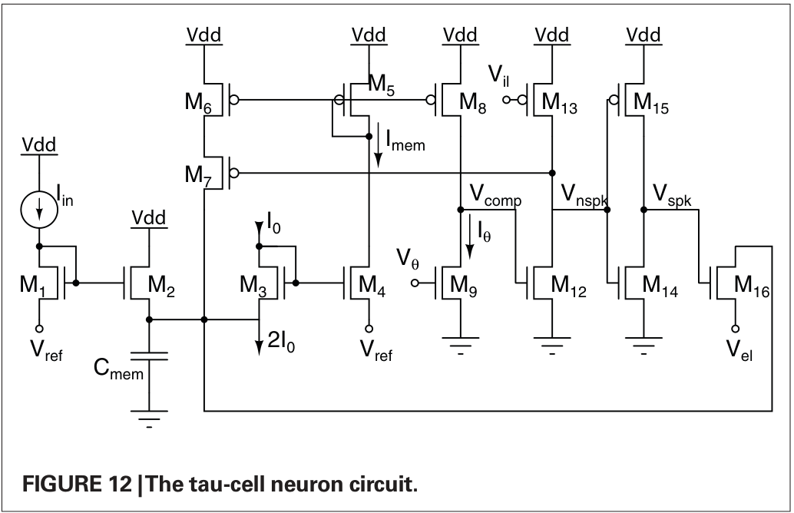
Figura 4 — Estratta da Indiveri et al. (2011), Fig. 12: Schema elettrico completo a livello transistor ($M_1\text{–}M_{16}, C_{\text{mem}}$) del neurone log-domain Tau-Cell.
Il neurone Tau-Cell (Figura 4) trasforma il filtro log-domain di Figura 1A in un neurone spiking completo utilizzando 16 transistor ($M_1\text{–}M_{16}$):
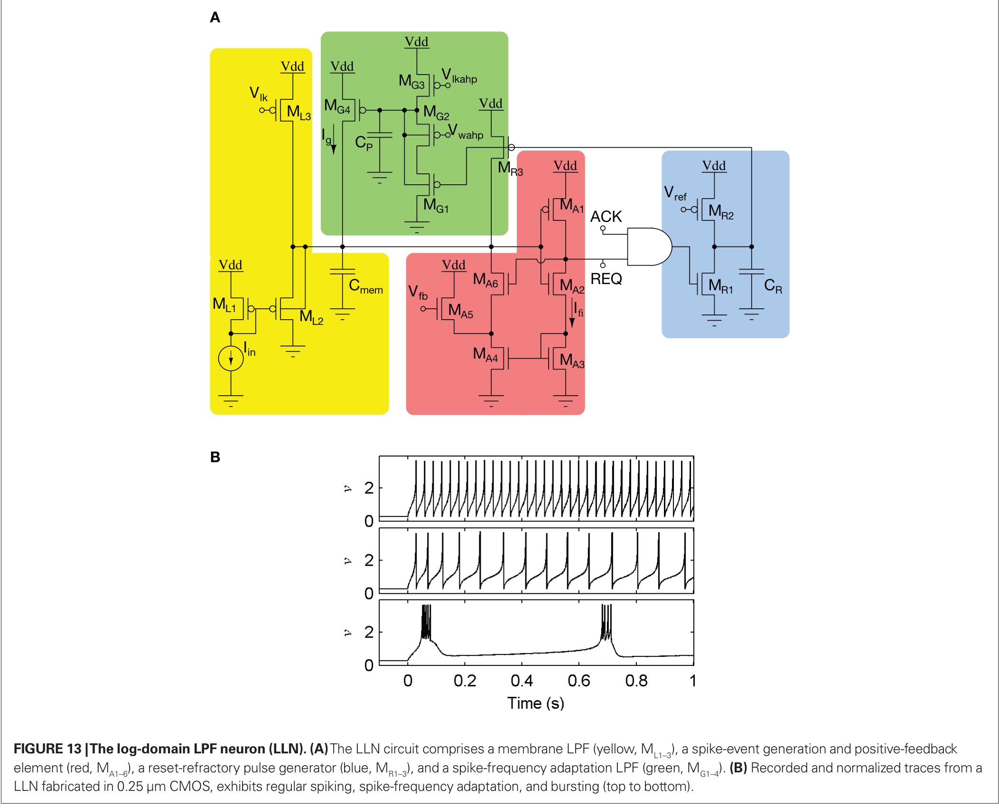
Figura 5 — Estratta da Indiveri et al. (2011), Fig. 13: Il neurone Log-Domain LPF (LLN). (A) Schema elettrico suddiviso in 4 blocchi funzionali: filtro LPF di membrana (giallo, $M_{L1\text{–}3}, C_{\text{mem}}$), generatore di spike con feedback positivo cubico translineare (rosso, $M_{A1\text{–}6}$), generatore di impulso refrattario/reset (blu, $M_{R1\text{–}3}, C_R$) e filtro LPF di adattamento di frequenza (verde, $M_{G1\text{–}4}, C_P$). (B) Tracce sperimentali misurate su chip CMOS $0.25\,\mu\text{m}$: regular spiking, spike-frequency adaptation e bursting.
Come mostrato in Figura 5, il neurone LLN (che dissipa appena $50\text{–}1000\,\text{nW}$ in CMOS $0.25\,\mu\text{m}$) accoppia due filtri log-domain del tipo di Figura 1B con un anello translineare cubico, implementando esattamente il sistema dinamico dell'Equazione (1):
REQ.ACK, genera l'impulso di reset $r(t)$ di durata $T_R$ regolata da $V_{\text{ref}}$ su $M_{R2}$, accendendo il pMOS $M_{R3}$ che tira $C_{\text{mem}}$ a $V_{dd}$ (azzerando $v$).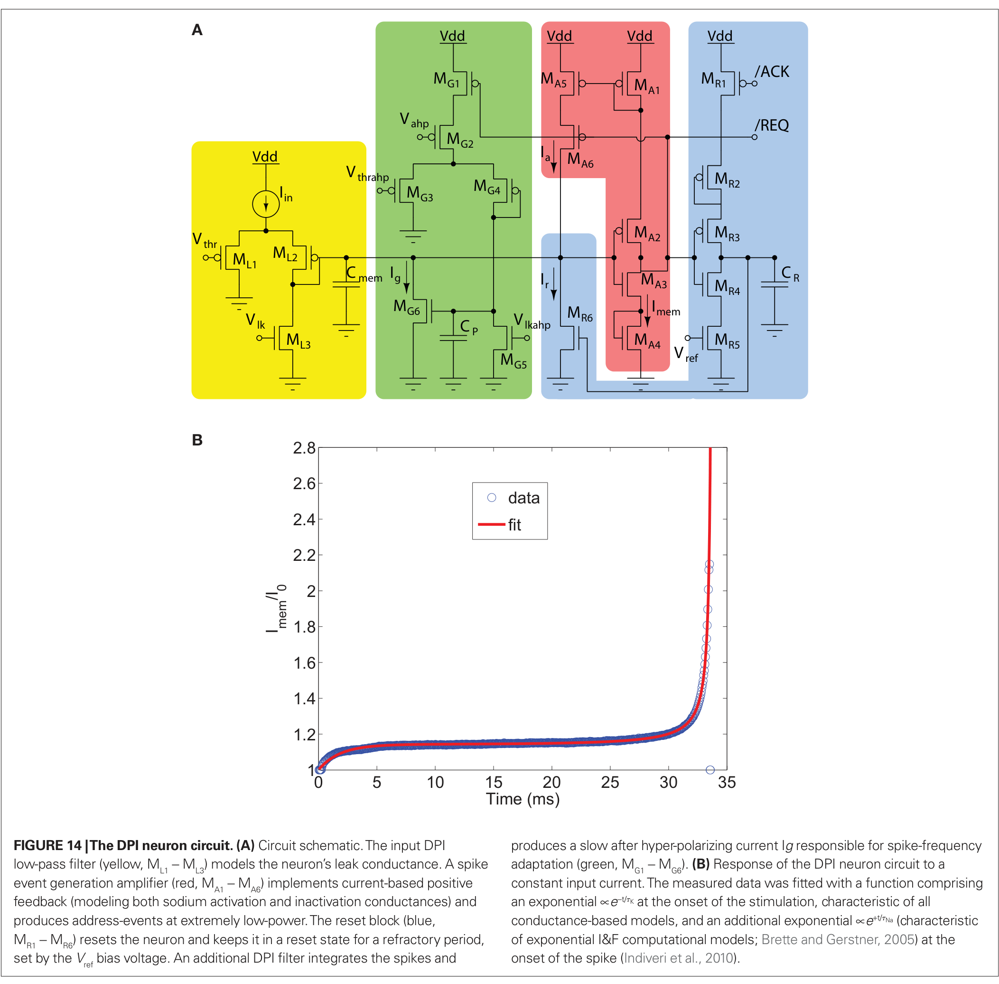
Figura 6 — Estratta da Indiveri et al. (2011), Fig. 14: Il circuito del neurone DPI (AdEx in modalità corrente). (A) Schema elettrico a 21 transistor e 3 condensatori ($C_{\text{mem}}, C_P, C_R$) suddiviso in 4 blocchi: filtro DPI di ingresso/leak (giallo, $M_{L1\text{–}3}$), filtro DPI di adattamento SFA (verde, $M_{G1\text{–}6}$), amplificatore di generazione spike con feedback positivo esponenziale (rosso, $M_{A1\text{–}6}$) e blocco di reset/periodo refrattario (blu, $M_{R1\text{–}6}$). (B) Risposta misurata della corrente di membrana $I_{\text{mem}}/I_0$ a un gradino di corrente e fit analitico con doppio esponenziale ($\propto e^{-t/\tau_K}$ all'onset dello stimolo e $\propto e^{+t/\tau_{\text{Na}}}$ all'innesco dello spike).
Il Neurone DPI (Figura 6) sostituisce i filtri LPF semplici del neurone LLN con due circuiti DPI (Figura 1C) e un generatore di spike a feedback positivo esponenziale, realizzando con 21 transistor e 3 capacità il modello Adaptive Exponential Integrate-and-Fire (AdEx) di Brette & Gerstner (2005):
con parametri fisici governati dalle tensioni di bias in sottosoglia:
La corrente sinaptica totale $I_{\text{in}}$ alimenta la coppia differenziale nMOS $M_{L1}\text{–}M_{L2}$ (con gate di $M_{L1}$ polarizzato da $V_{\text{thr}}$ e gate di $M_{L2}$ collegato al nodo di membrana $C_{\text{mem}}$). L'nMOS $M_{L3}$ (polarizzato da $V_{\text{lk}}$) sottrae la corrente di leak $I_\tau$ da $C_{\text{mem}}$.
L'nMOS $M_{A4}$ (col gate collegato a $C_{\text{mem}}$) converte esponenzialmente la tensione su $C_{\text{mem}}$ nella corrente sottosoglia di membrana $I_{\text{mem}}$. Quando $I_{\text{mem}}$ supera la corrente di soglia del pMOS $M_{A1}$, la tensione sul drain di $M_{A1}/M_{A3}$ scende, accendendo l'inverter successivo ($M_{A2}$ pMOS, $M_{A3}$ nMOS) e lo specchio di corrente pMOS $M_{A5}\text{–}M_{A6}$. Il transistor $M_{A6}$ reinietta su $C_{\text{mem}}$ una corrente di feedback positivo $I_a = f(I_{\text{mem}})$ che cresce esponenzialmente con $I_{\text{mem}}$, generando l'impennata dello spike (fit rosso in Figura 6B) con dissipazione di potenza minima e attivando la linea /REQ.
All'arrivo del segnale di handshaking /ACK sul gate del pMOS $M_{R1}$, il nodo della capacità di refrattarietà $C_R$ viene caricato a $V_{dd}$. Al termine dello spike, $C_R$ si scarica lentamente attraverso il ramo starved inverter formato da $M_{R2}, M_{R3}, M_{R4}, M_{R5}$ con velocità fissata dalla tensione di bias $V_{\text{ref}}$ sul gate di $M_{R5}$. Finché la tensione su $C_R$ resta alta, l'nMOS di reset $M_{R6}$ rimane acceso e scarica $C_{\text{mem}}$ con una forte corrente $I_r$, mantenendo il neurone bloccato per tutto il periodo refrattario.
Ad ogni spike emesso, il pMOS $M_{G1}$ si accende e inietta la corrente fissata da $M_{G2}$ ($V_{\text{ahp}}$) nella coppia differenziale pMOS $M_{G3}\text{–}M_{G4}$ (soglia $V_{\text{thrahp}}$ su $M_{G3}$, gate di $M_{G4}$ collegato alla capacità di adattamento $C_P$). L'nMOS $M_{G5}$ ($V_{\text{lkahp}}$) scarica lentamente $C_P$ con costante di tempo $\tau_g$, mentre l'nMOS di uscita $M_{G6}$ converte la tensione su $C_P$ nella corrente iperpolarizzante lenta $I_g$, sottraendola direttamente da $C_{\text{mem}}$ in parallelo a $M_{L3}$.
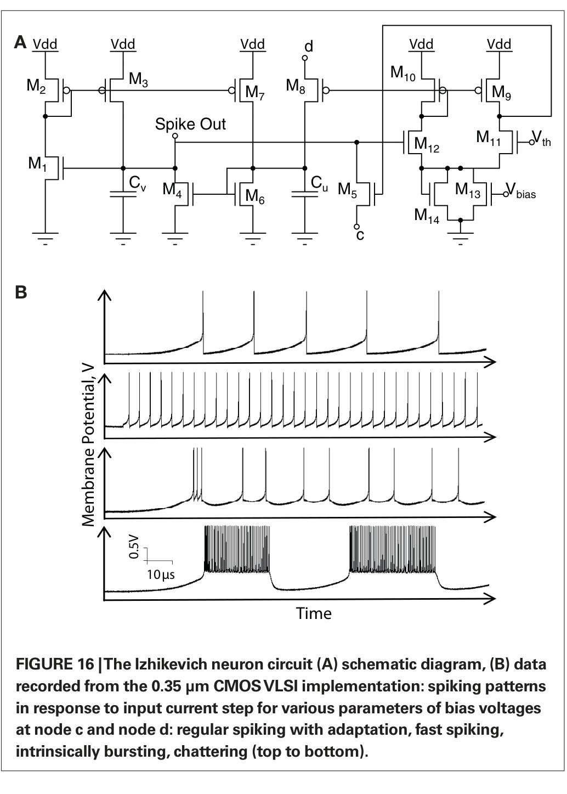
Figura 7 — Estratta da Indiveri et al. (2011), Fig. 16: Neurone di Izhikevich in CMOS $0.35\,\mu\text{m}$ (Wijekoon & Dudek, 2008). (A) Schema elettrico a 14 transistor ($M_1\text{–}M_{14}$) e due capacità ($C_v$ per il potenziale di membrana $V$ e $C_u$ per la variabile lenta $U$). (B) Pattern di firing registrati dal chip variando le tensioni di bias ai nodi $c$ e $d$: regular spiking con adattamento, fast spiking, intrinsically bursting e chattering.
Il circuito di Figura 7A (e la sua versione in sottosoglia a 12 transistor $M_1\text{–}M_{12}$ a $V_{DD}=0.25\,\text{V}$ impiegata in NET-TEN, Figura 16b, área $1476.84\,\mu\text{m}^2$, $C_v = 76.86\,\text{fF}$, $C_u = 614.88\,\text{fF}$) implementa direttamente la coppia di equazioni differenziali di Izhikevich:
Il condensatore $C_v$ integra la corrente sinaptica $I_{\text{syn}}$. L'nMOS $M_1$ (col gate collegato a $V_{\text{mem}}$ su $C_v$) genera una corrente di drain non lineare (quadratica in forte inversione / esponenziale in debole inversione) che viene specchiata dallo specchio di corrente pMOS $M_2\text{–}M_3$ e reiniettata positivamente su $C_v$ (implementando il termine rigenerativo $+0.04 V_{\text{mem}}^2 + 5V_{\text{mem}}$). L'nMOS $M_4$ ha il gate pilotato dalla tensione $U$ sul condensatore lento $C_u$ e sottrae da $C_v$ la corrente di recupero $-U$.
Un secondo pMOS $M_7$ (accoppiato a specchio con $M_2$) inietta in $C_u$ una corrente proporzionale a $I_{M1}(V_{\text{mem}})$ (termine $+a b V_{\text{mem}}$), mentre l'nMOS connesso a diodo $M_6$ scarica $C_u$ verso massa con una corrente dipendente da $U$ stessa (termine $-a U$). Poiché $C_u \approx 8 C_v$ e $(W/L)_{M_7} < (W/L)_{M_3}$, la dinamica di $U$ è molto più lenta di quella di $V_{\text{mem}}$.
Quando $V_{\text{mem}}$ supera la soglia del comparatore ($M_9\text{–}M_{14}$ in Fig. 7A, oppure i due inverter in cascata $M_9\text{–}M_{10}$ e $M_{11}\text{–}M_{12}$ in Fig. 16b di NET-TEN):
c ($V_C$, parametro $c$: $V_{\text{mem}} \leftarrow c$).d ($V_D$) nel condensatore $C_u$ (parametro $d$: $U \leftarrow U + d$).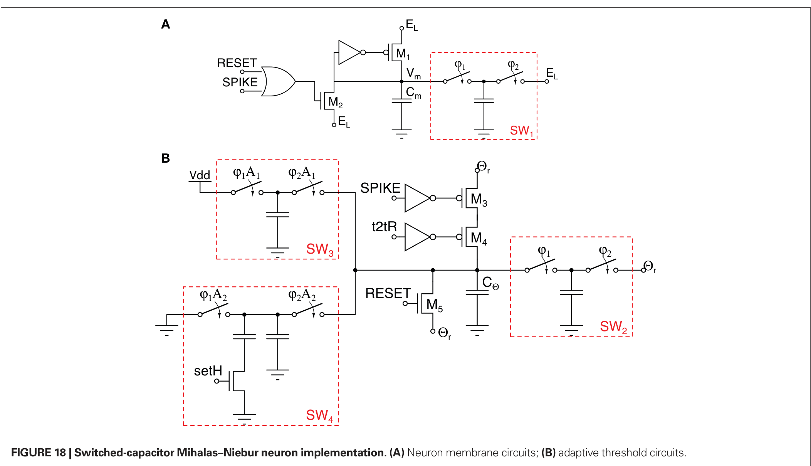
Figura 9 — Estratta da Indiveri et al. (2011), Fig. 18: Implementazione Switched-Capacitor (S-C) del neurone a soglia adattativa di Mihalas–Niebur (Folowosele et al., 2009a). (A) Circuito di membrana ($C_m$, resistore S-C di leak $\text{SW}_1$ pilotato da $\phi_1, \phi_2$, e switch di reset $M_1, M_2$ verso $E_L$). (B) Circuito della soglia adattativa ($C_\Theta$, blocchi S-C $\text{SW}_2, \text{SW}_3, \text{SW}_4$ e switch di aggiornamento $M_3, M_4, M_5$ verso $\Theta_r$).
Per eliminare alla radice la sensibilità al mismatch dei transistor in sottosoglia, Folowosele et al. (2009a,b) (Figura 9) hanno implementato il modello di Mihalas–Niebur sostituendo i transistor di leak con resistori a capacità commutate (Switched-Capacitor, S-C): un piccolo condensatore $C_{\text{sw}}$ commutato tra due nodi da due fasi di clock non sovrapposte ($\phi_1, \phi_2$ a frequenza $f_{\text{clk}}$) trasferisce una carica $\Delta Q = C_{\text{sw}} \Delta V$ per ciclo, realizzando una conduttanza equivalente altamente precisa e accordabile via frequenza:
Il blocco SW1 realizza il leak di membrana verso $E_L$, mentre i blocchi SW2, SW3, SW4 accoppiano linearmente la soglia $\Theta$ (su $C_\Theta$) a $V_m$, permettendo di riprodurre 10 pattern di spiking corticali senza alcuno sforzo di calibrazione analogica (a fronte però della necessità di distribuire molteplici fasi di clock a ogni neurone).
(Completa la rassegna di Paper 1 il neurone a pacchetti di carica calibrati digitalmente a 5-bit tramite Digi-MOS di Serrano-Gotarredona et al., 2006 — Fig. 20 di Paper 1, e il neurone interamente digitale a 18-bit di Camuñas Mesa et al., 2008 — Fig. 21 di Paper 1).
Il processore ROLLS (Reconfigurable On-line Learning Spiking Neuromorphic Processor, Qiao et al., 2015) rappresenta la realizzazione completa su larga scala VLSI dei principi di progettazione sub-threshold current-mode esposti in Indiveri et al. (2011). Fabbricato in un processo standard 180 nm CMOS 1P6M (1 Poly, 6 Metal), occupa un'area di die di $51.4\,\text{mm}^2$, integra circa $12.2\,\text{milioni}$ di transistor e dissipa una potenza media di $\approx 4\,\text{mW}$ in condizioni operative tipiche (Figura 10).
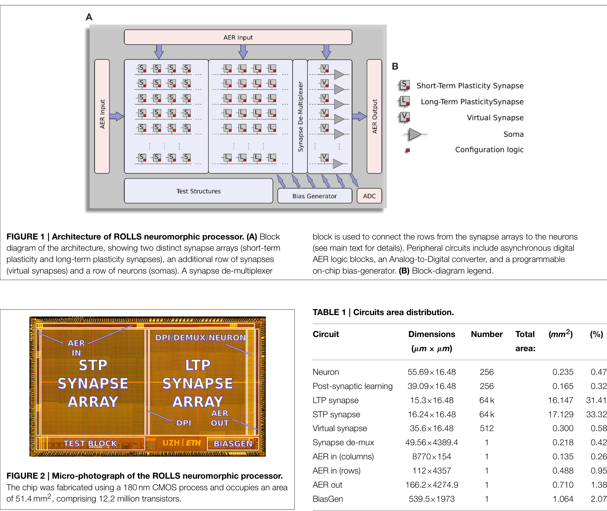
Figura 10 — Estratta da Qiao et al. (2015), Fig. 1, Fig. 2 e Table 1: (In alto) Diagramma a blocchi dell'architettura di ROLLS: matrice di $256\times 256$ sinapsi programmabili a breve termine (STP), matrice di $256\times 256$ sinapsi plastiche bistabili a lungo termine (LTP), fila di $256\times 2$ sinapsi virtuali, Synapse De-Multiplexer, fila di 256 somi AdEx, periferiche asincrone AER Input/Output, Bias Generator e ADC. (In basso a sinistra) Microfotografia del die in CMOS 180 nm ($51.4\,\text{mm}^2$). (In basso a destra) Tabella ufficiale della distribuzione dell'area silicea.
L'architettura co-localizza memoria e calcolo (in-memory computing non-von Neumann) mediante:
E/I) e circuito analogico di Short-Term Depression (STD). Ogni riga condivide due integratori DPI di riga (uno eccitatorio AMPA e uno inibitorio GABA) con capacità da $1\,\text{pF}$ e costanti di tempo di decine di millisecondi.Come documentato nella Tabella 1 di Figura 10, l'analisi della ripartizione dell'area di silicio rivela un dato architetturale di fondamentale importanza:
NMDA, LEAK, AHP, Na+, K+)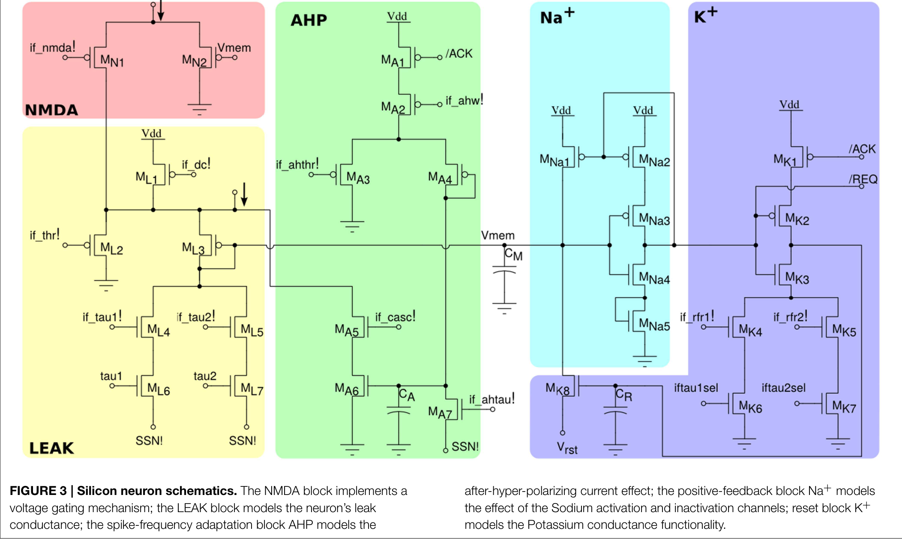
Figura 11 — Estratta da Qiao et al. (2015), Fig. 3: Schema elettrico completo a livello transistor del neurone al silicio AdEx integrato in ROLLS, suddiviso in 5 blocchi funzionali: NMDA (rosa, $M_{N1\text{–}N2}$), LEAK (giallo, $M_{L1\text{–}L7}, C_M$), AHP (verde, $M_{A1\text{–}A7}, C_A$), Na+ (azzurro, $M_{Na1\text{–}Na5}$) e K+ (blu, $M_{K1\text{–}K8}, C_R$).
Lo schema elettrico completo del soma integrato in ROLLS (Figura 11) evolve il neurone DPI di Indiveri (Figura 6) introducendo 5 blocchi funzionali controllati da 13 bias globali (generati dal BiasGen on-chip e contrassegnati dal punto esclamativo !) e da 2 latch digitali locali che permettono di selezionare tra due costanti di tempo di leak e due periodi refrattari (4 popolazioni neuronali distinte):
NMDA — Voltage-Gating Sinaptico ($M_{N1}, M_{N2}$, in alto a sinistra, rosa):Riceve la corrente post-sinaptica lenta dal DPI di riga della matrice LTP. La coppia differenziale nMOS $M_{N1}\text{–}M_{N2}$ confronta il potenziale di membrana Vmem (sul gate di $M_{N2}$) con la soglia di sblocco del magnesio if_nmda! (sul gate di $M_{N1}$): solo quando il neurone post-sinaptico è sufficientemente depolarizzato ($V_{\text{mem}} > \text{if\_nmda!}$), la corrente fluisce nel ramo di $M_{N2}$ e viene specchiata dallo specchio pMOS superiore dentro il nodo di membrana Vmem.
LEAK — DPI di Membrana con Shifted-Source Biasing e Doppia Costante di Tempo ($M_{L1}\text{–}M_{L7}, C_M$, in basso a sinistra, giallo):if_dc!): Inietta una corrente di stimolazione costante regolabile.if_thr!, il gate di $M_{L3}$ è collegato a Vmem sulla capacità di membrana $C_M$.tau1 / tau2) seleziona se scaricare il nodo tramite $M_{L4}$ (bias if_tau1!) oppure tramite $M_{L5}$ (bias if_tau2!).SSN! (Shifted-Source Biasing, Fig. 7C di Paper 1) per raggiungere correnti sub-pA e costanti di tempo $\tau_m$ fino a centinaia di ms. Inoltre, i transistor critici di leak $M_{L4}$ e $M_{L5}$ sono sovradimensionati a $W / L = 2\,\mu\text{m} / 4\,\mu\text{m}$ per minimizzare il mismatch di Pelgrom.AHP — Spike-Frequency Adaptation DPI ($M_{A1}\text{–}M_{A7}, C_A$, al centro, verde):Ad ogni spike confermato da /ACK (gate del pMOS $M_{A1}$), il pMOS $M_{A2}$ (if_ahw!) inietta un impulso di carica nella coppia differenziale pMOS $M_{A3}\text{–}M_{A4}$ (soglia if_ahthr! su $M_{A3}$, capacità di adattamento $C_A$ sul gate di $M_{A4}$). L'nMOS $M_{A7}$ (gate a if_ahtau!, source a SSN!) scarica lentamente $C_A$, mentre l'nMOS $M_{A6}$ (in serie al cascode $M_{A5}$ polarizzato da if_casc!) sottrae da Vmem la corrente iperpolarizzante lenta $I_g$.
Na+ — Feedback Positivo Esponenziale ($M_{Na1}\text{–}M_{Na5}$, centro-destra, azzurro):L'nMOS $M_{Na4}$ (col gate collegato a Vmem) è posto in serie a $M_{Na3}$ e allo switch di inattivazione $M_{Na5}$ (controllato in opposizione di fase dalla capacità di refrattarietà $C_R$). Quando Vmem sale, la corrente di drain di $M_{Na3}/M_{Na4}$ abbassa il nodo di richiesta /REQ e viene specchiata dallo specchio pMOS $M_{Na1}\text{–}M_{Na2}$, che reinietta esponenzialmente corrente in Vmem. Per abbattere la variabilità della soglia di sparo, i transistor sono dimensionati a $(W/L)_{M_{Na3}} = 4\,\mu\text{m}/0.4\,\mu\text{m}$ e $(W/L)_{M_{Na4}} = 1\,\mu\text{m}/4\,\mu\text{m}$, ottenendo un mismatch medio della curva $f\text{–}I$ su tutti i 256 neuroni del chip pari a solo il $9.4\%$!
K+ — Reset Regolabile e Doppia Refrattarietà ($M_{K1}\text{–}M_{K8}, C_R$, a destra, blu):All'arrivo di /ACK su $M_{K1}$, lo starved inverter ($M_{K2}, M_{K3}$) carica la capacità $C_R$, che si scarica poi attraverso $M_{K4}$ (if_rfr1!) o $M_{K5}$ (if_rfr2!), selezionati dagli switch $M_{K6}, M_{K7}$ (iftau1sel / iftau2sel). Finché $C_R$ è alta, l'nMOS di reset $M_{K8}$ (col source collegato al potenziale di reset accordabile Vrst) mantiene Vmem inchiodato a Vrst e spegne $M_{Na5}$.
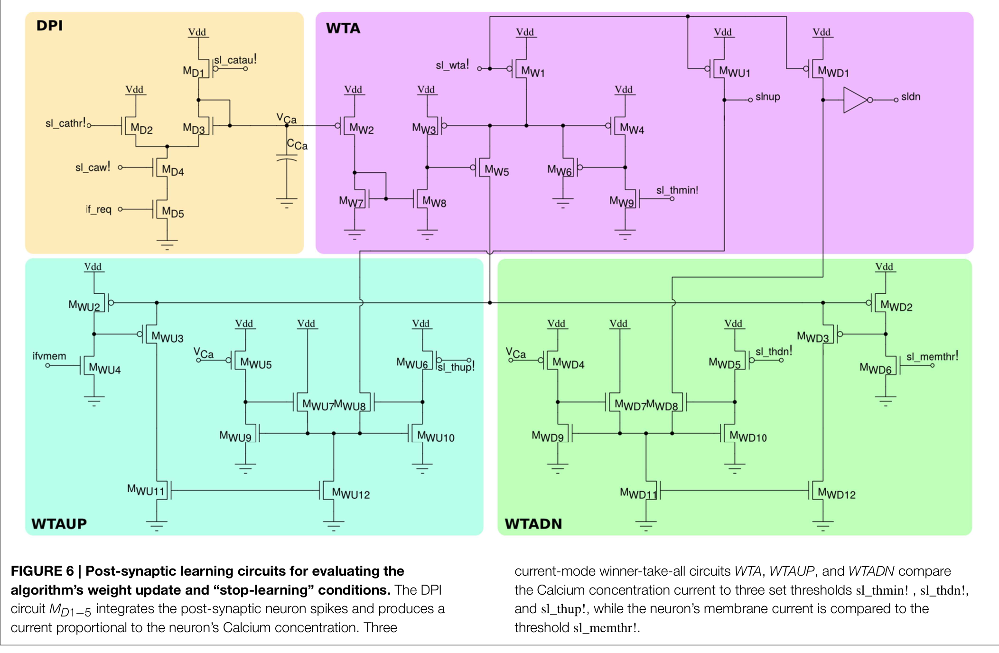
Figura 12 — Estratta da Qiao et al. (2015), Fig. 6: Circuiti post-sinaptici di apprendimento per la valutazione dell'aggiornamento del peso e delle condizioni di "stop-learning" basate sulla concentrazione di Calcio: blocco DPI del Calcio ($M_{D1\text{–}D5}, C_{\text{Ca}}$) e tre circuiti Winner-Take-All in modalità corrente WTA ($M_{W1\text{–}W9}$), WTAUP ($M_{WU1\text{–}WU12}$) e WTADN ($M_{WD1\text{–}WD12}$).
Come mostrato in Figura 12, per implementare le condizioni dell'algoritmo di Brader et al. (2007):
ogni neurone integra i propri spike post-sinaptici (if_req) tramite il blocco DPI del Calcio ($M_{D1}\text{–}M_{D5}, C_{\text{Ca}}$): la tensione risultante Vca su $C_{\text{Ca}}$ pilota i gate dei transistor pMOS nei tre comparatori Winner-Take-All (WTA) in corrente:
WTA ($M_{W1}\text{–}M_{W9}$): confronta la corrente di Calcio ($M_{W2}$) con la soglia inferiore $\theta_1$ (sl_thmin! su $M_{W9}$), abilitando i pull-up $M_{WU1}$ e $M_{WD1}$ solo se $Ca > \theta_1$.WTAUP ($M_{WU1}\text{–}M_{WU12}$): confronta $Ca$ ($M_{WU5}$) con la soglia superiore $\theta_3$ (sl_thup! su $M_{WU6}$) e la corrente di membrana ifvmem ($M_{WU4}$) con $\theta_{\text{mem}}$ ($M_{WU2}\text{–}M_{WU3}$), attivando il segnale digitale di potenziamento slnup.WTADN ($M_{WD1}\text{–}M_{WD12}$): confronta $Ca$ ($M_{WD4}$) con la soglia $\theta_2$ (sl_thdn! su $M_{WD5}$) e la corrente di membrana con $\theta_{\text{mem}}$ (sl_memthr! su $M_{WD6}$), attivando il segnale digitale di depressione sldn.SET, JUMP, BIST, CC)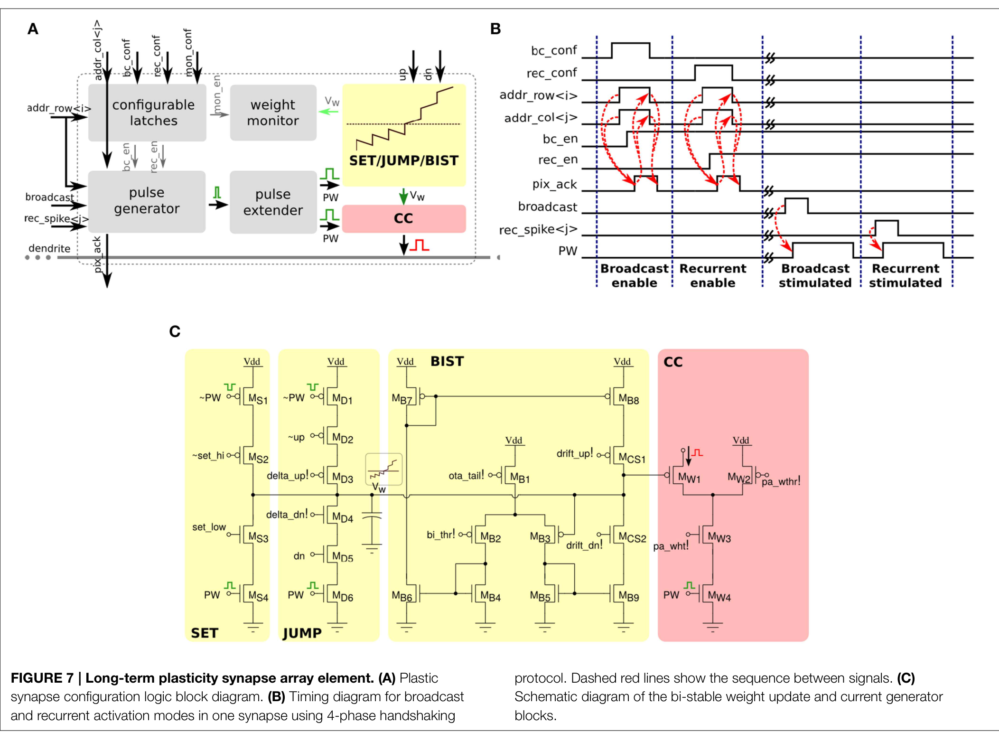
Figura 13 — Estratta da Qiao et al. (2015), Fig. 7: Elemento della matrice sinaptica a lungo termine (LTP) di ROLLS. (A) Diagramma a blocchi della logica asincrona locale (3 latch configurabili bc_en, rec_en, mon_en, pulse generator e pulse extender). (B) Diagramma temporale del protocollo handshaking a 4 fasi per le modalità broadcast e ricorrente. (C) Schema elettrico a livello transistor dei 4 blocchi analogici connessi al nodo capacitivo del peso interno $V_w$: SET ($M_{S1\text{–}S4}$), JUMP ($M_{D1\text{–}D6}$), BIST ($M_{B1\text{–}B9}, M_{CS1\text{–}CS2}$) e CC ($M_{W1\text{–}W4}$).
In ciascuna delle $64\text{K}$ celle LTP (Figura 13C), il peso interno è rappresentato dalla tensione analogica $V_w$ sul condensatore di peso, su cui agiscono quattro blocchi a transistor:
SET ($M_{S1}\text{–}M_{S4}$): Permette di inizializzare dall'esterno via AER lo stato binario del peso caricando $V_w \to V_{dd}$ (~set_hi e ~PW sui pMOS $M_{S1}, M_{S2}$) o scaricandolo a massa (set_low e PW sugli nMOS $M_{S3}, M_{S4}$).JUMP ($M_{D1}\text{–}M_{D6}$): All'arrivo dell'impulso pre-sinaptico esteso PW / ~PW, se il segnale post-sinaptico ~up (copia invertita di slnup) è attivo basso, i pMOS $M_{D1}, M_{D2}, M_{D3}$ iniettano su $V_w$ un gradino positivo $+\Delta w^+$ regolato da delta_up!; se invece dn (sldn) è attivo alto, gli nMOS $M_{D4}, M_{D5}, M_{D6}$ sottraggono un gradino $-\Delta w^-$ regolato da delta_dn!.BIST ($M_{B1}\text{–}M_{B9}, M_{CS1}, M_{CS2}$): Implementa il drift bistabile continuo $\frac{dw_i}{dt} = \pm C_{\text{drift}}$. È un amplificatore a transconduttanza wide-range (coppia differenziale pMOS $M_{B2}\text{–}M_{B3}$ polarizzata da $M_{B1}$ ota_tail! e specchi $M_{B4}\text{–}M_{B9}$) collegato in retroazione positiva sul nodo $V_w$ stesso, con correnti di uscita limitate dai transistor di current-starving $M_{CS1}$ (pMOS, bias drift_up!) e $M_{CS2}$ (nMOS, bias drift_dn!): se $V_w > \text{bi\_thr!}$ (gate di $M_{B2}$), l'OTA spinge lentamente $V_w$ verso il rail positivo $V_{dd}$; se $V_w < \text{bi\_thr!}$, lo spinge verso massa, rendendo il peso immune al leakage a lungo termine!CC — Current Converter ($M_{W1}\text{–}M_{W4}$): Durante l'impulso pre-sinaptico PW ($M_{W4}$), la coppia differenziale nMOS $M_{W1}\text{–}M_{W2}$ confronta $V_w$ con la soglia pa_wthr! ed eroga verso il filtro DPI di riga una corrente EPSC con ampiezza massima fissata da pa_wht! ($M_{W3}$).STD, ECC, ICC) e Circuiti EPSC/STDP di NET-TEN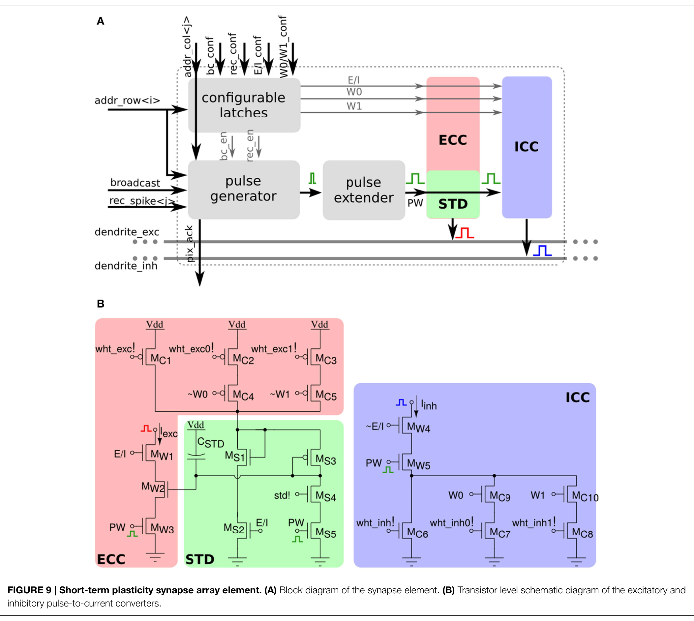
Figura 14 — Estratta da Qiao et al. (2015), Fig. 9: Elemento della matrice sinaptica a breve termine (STP) di ROLLS. (A) Diagramma a blocchi con latch configurabili per il peso a 2 bit (W0, W1), polarità E/I e attivazione bc_en/rec_en. (B) Schema elettrico a livello transistor del DAC eccitatorio a 2 bit ($M_{C1\text{–}C5}$), convertitore eccitatorio ECC ($M_{W1\text{–}W3}$), circuito di Short-Term Depression STD ($M_{S1\text{–}S5}, C_{\text{STD}}$) e convertitore inibitorio ICC ($M_{W4\text{–}W5}, M_{C6\text{–}C10}$).
Nelle $64\text{K}$ sinapsi STP di ROLLS (Figura 14B):
ICC, $M_{W4}\text{–}M_{W5}, M_{C6}\text{–}M_{C10}$): I bit W0 e W1 attivano i rami binari pesati (wht_exc0!, wht_exc1! per E/I = 1; wht_inh0!, wht_inh1! per E/I = 0) generando 4 livelli discreti di corrente sinaptica $I_{\text{exc}}$ o $I_{\text{inh}}$.STD — Short-Term Depression ($M_{S1}\text{–}M_{S5}, C_{\text{STD}}$): A riposo, il condensatore $C_{\text{STD}}$ si carica attraverso il pMOS connesso a diodo $M_{S3}$ in modo che la tensione di gate del pMOS di uscita $M_{W2}$ (nel blocco ECC) eguagli quella di $M_{S1}$. Ad ogni impulso pre-sinaptico PW sul gate di $M_{S5}$, il transistor $M_{S4}$ (polarizzato da std!) sottrae un pacchetto di carica da $C_{\text{STD}}$, riducendo transitoriamente l'ampiezza degli impulsi $I_{\text{exc}}$ successivi finché $C_{\text{STD}}$ non recupera lentamente attraverso il diodo $M_{S3}$.Nel chip NET-TEN (Figura 16c,d), progettato per operare a $V_{DD} = 250\,\text{mV}$ con area minima:
pre, l'nMOS $M_{E1}$ si accende e il pMOS $M_{E3}$ si spegne, scaricando $C_{\text{syn}}$ con una corrente regolata dal peso $V_w$ sul gate di $M_{E2}$; il pMOS d'uscita $M_{E4}$ converte esponenzialmente $V_{\text{syn}}$ in $I_{\text{syn}}$ (picco $486.39\,\text{pA}$ per $V_w = 200\,\text{mV}$); al termine dell'impulso pre, $M_{E3}$ si riaccende e ricarica lentamente $C_{\text{syn}}$ verso $V_{DD}$ con costante di tempo $\tau = 212.83\,\mu\text{s}$.post su $M_{S5}$ per iniettare la corrente di potenziamento $I_{\text{pot}}$ (regolata da $V_p$ su $M_{S6}$) in $C_w$; e una traccia post-sinaptica nel ramo destro ($M_{S10}\text{–}M_{S12}$, costante di tempo $\tau_-$ regolata da $V_{td}$ su $M_{S12}$) campionata all'arrivo dell'impulso positivo pre su $M_{S8}$ per sottrarre la corrente di depressione $I_{\text{dep}}$ (regolata da $V_d$ su $M_{S7}$) da $C_w$.In un processore singolo-core a crossbar pieno come ROLLS ($N \times N$ sinapsi fisiche), l'area delle sinapsi cresce quadraticamente ($\mathcal{O}(N^2)$), impedendo di scalare a migliaia di neuroni. D'altra parte, nelle architetture digitali pure (come IBM TrueNorth o SpiNNaker) che usano memorie SRAM centralizzate con routing point-to-point, per una rete di $N$ neuroni con fan-out $F$ ciascun neurone richiede $F \log_2(N)$ bit di memoria (es. per $N = 2^{20} \approx 10^6$ e $F = 2^{13} \approx 8192$, servirebbero $160\,\text{kbit/neurone}$!).
Moradi et al. (2018) risolvono questo problema ispirandosi alla connettività modulare della corteccia cerebrale (cluster locali densamente connessi + poche proiezioni a lungo raggio): i neuroni vengono suddivisi in $N/C$ cluster (core) da $C$ neuroni ciascuno ($C = 256$ in DYNAP-SE), combinando due stadi di routing con memorie eterogenee (SRAM + CAM):
Definendo il rapporto di flessibilità $\alpha = K/C$, la memoria totale per neurone è:
Uguagliando a zero la derivata rispetto a $M$ ($\frac{\partial \text{MEM}}{\partial M} = 0$), si trova il fan-out locale ottimo $M^*$ e la memoria minima assoluta per neurone (per $\alpha = 1$, ossia $K = C$):
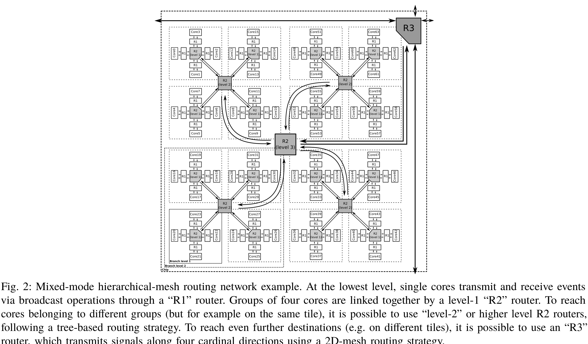
Figura 19 — Estratta da Moradi et al. (2018), Fig. 2: Rete di routing gerarchica ibrida (Mixed-mode hierarchical-mesh) di DYNAPs: i singoli core trasmettono e ricevono eventi in broadcast tramite un router locale R1; gruppi di 4 core sono interconnessi da router ad albero R2 (livelli 1, 2, 3) per bassa latenza locale, mentre il traffico globale inter-chip su griglia bidimensionale è gestito dai router 2D-mesh R3.
Il chip prototipo DYNAP-SE (fabbricato in CMOS $0.18\,\mu\text{m}$ 1P6M, area die $43.79\,\text{mm}^2$, area core $38.5\,\text{mm}^2$, alimentazione core da $1.3\,\text{V}$ a $1.8\,\text{V}$) integra 4 core da 256 neuroni = 1024 neuroni totali. Come illustrato nelle Figure 19, 20 e 24:
Ciascuno dei 256 nodi di un core co-localizza:
FEPSP (Fast Excitatory — tipo AMPA);SEPSP (Slow Excitatory — tipo NMDA con voltage-gating);FIPSP (Subtractive Inhibitory — tipo $\text{GABA}_B$);SIPSP (Shunting Inhibitory — tipo $\text{GABA}_A$);Progettata senza alcun clock globale tramite sintesi formale di Martin (Communicating Hardware Processes CHP $\to$ Handshaking Expansion HSE a 4 fasi con codifica dual-rail $\to$ Production Rules CMOS con C-elements di Muller):
10-bit Tag + 6-bit relative XY chip address $\Delta X, \text{sign}X, \Delta Y, \text{sign}Y$ + 4-bit Core ID), consentendo un fan-out massimo di $4\text{k}$ ($4096$) neuroni post-sinaptici.SPT), altrimenti lo invia a R3.North, South, East, West) con una latenza intrinseca di soli $2.5\,\text{ns}$ (latenza totale chip-to-chip inclusi i pad pari a $15.4\,\text{ns}$, throughput $400\,\text{Mevents/s}$).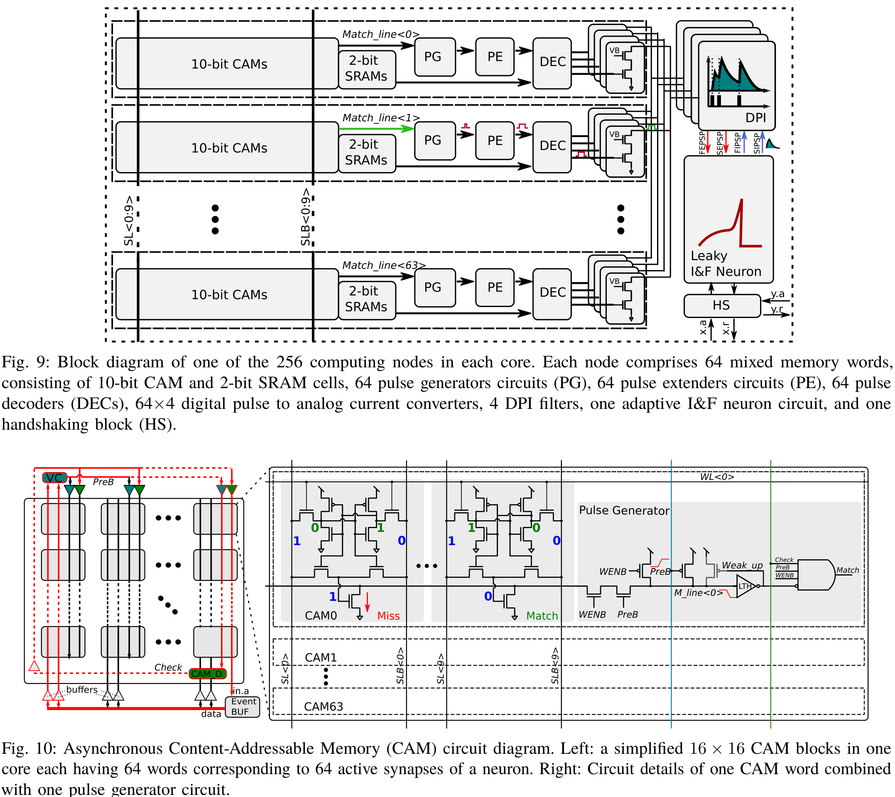
Figura 20 — Estratta da Moradi et al. (2018), Fig. 9 e Fig. 10: (In alto) Diagramma a blocchi di uno dei 256 nodi computazionali di un core DYNAP-SE (64 parole miste da 10-bit CAM + 2-bit SRAM, 64 PG, 64 PE, 64 DEC, 4 filtri sinaptici DPI [FEPSP, SEPSP, FIPSP, SIPSP], 1 soma AdEx e blocco HS). (In basso) Circuito della memoria CAM asincrona: a sinistra, organizzazione della matrice $16\times 16$ nel core con Event BUF, Validity Check (VC) e cella dummy CAM_D; a destra, schematico transistor-level della cella CAM a 9 transistor (9T NOR-type) con inverter a bassa soglia LTH, pull-up Weak_up e Pulse Generator.
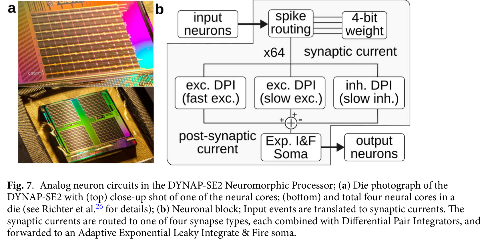
Figura 24 — Estratta da Bartels et al. (2025), Fig. 7: Micrografia del die DYNAP-SE2 con zoom su un core neurale e schema a blocchi del compartimento neuronale analogico (routing per 64 sinapsi, peso a 4-bit, 4 blocchi DPI [fast exc, slow exc, slow inh, fast inh] sommati nel soma Exp. I&F).
Il circuito più critico per l'efficienza di DYNAP-SE è la memoria CAM asincrona a 9 transistor (9T NOR-type) mostrata in Figura 20 (in basso a destra):
Ogni bit della parola CAM da 10 bit utilizza una cella SRAM di memorizzazione accoppiata a transistor di confronto di tipo NOR collegati alla linea comune M_line<0>. Durante lo stato neutro delle search-lines (SL = 0, SLB = 0), il blocco Validity Check (VC, posto nell'angolo in alto a destra del core) mantiene PreB = 0, pre-caricando tutte le $64 \times 256 = 16\,384$ M_line del core a $V_{dd}$. All'arrivo di un evento, PreB passa a $1$: qualsiasi bit non corrispondente (miss) accende il proprio ramo nMOS scaricando M_line a massa; solo le parole con tutti i 10 bit in match mantengono M_line alta. Un inverter a bassa soglia (LTH) con un pMOS di pull-up debole (Weak_up) in retroazione compensa la corrente di leakage sottosoglia dei 10 rami NOR spenti, evitando falsi miss.
CAM_D e Cancellazione Esatta del Mismatch Spaziale di Ritardo:Poiché l'impulso Match generato dalla CAM pilota i convertitori di corrente analogici, una variazione della sua larghezza temporale $\Delta t_{\text{pulse}}$ tra il primo e l'ultimo neurone del core introdurrebbe un grave errore sistematico sui pesi sinaptici. Per evitarlo senza appesantire ogni cella con logica QDI, nell'angolo opposto a VC (in basso a destra) è inserita una parola CAM dummy (CAM_D) cablata per avere sempre un solo bit su 10 in stato di miss (worst-case miss, scarica più lenta possibile). Quando CAM_D completa la scarica, asserisce il segnale globale Check = 1. Sia PreB (che determina il fronte di discesa $t_{dx}$ dell'impulso di match) sia Check (che determina il fronte di salita $t_{ux}$) vengono propagati attraverso catene di buffer identiche nella stessa direzione spaziale (dall'alto a sinistra verso il basso a destra). Di conseguenza, per una generica sinapsi $\text{CAM}_x$ i ritardi di propagazione spaziale $t_{d1x}$ e $t_{d2x}$ si elidono esattamente:
garantendo una larghezza d'impulso costante e invariante rispetto alla posizione fisica del neurone sul die (tempo totale di broadcast + search pari a soli $27\,\text{ns}$)!
In conformità alle richieste della traccia d'esame, questo capitolo mette a confronto in modo sistematico tutte le implementazioni di neuroni al silicio e tutti i sistemi/processori neuromorfici esaminati nei 7 articoli scientifici secondo i sette parametri ingegneristici chiave: tensione di alimentazione ($V_{DD}$), consumo statico, potenza dinamica/totale, energia per spike, area silicea, frequenza di firing (e costanti di tempo) e variabilità dei parametri (device mismatch).
La Tabella 5.1 sintetizza e confronta le principali topologie circuitali di neuroni spiking analizzate nel Capitolo 4 (integrando la Tabella 2 di Indiveri et al., 2011 con i dati quantitativi estratti da Qiao et al., 2015, Ronchini et al., 2023 e Wu et al., 2026).
Tabella 5.1 — Confronto multiparametrico delle topologie circuitali CMOS di neuroni spiking
| Topologia Circuito Neurone (Riferimento) | Regime Operativo e Stile Circuitale | Modello Matematico Implementato | Nodo CMOS / $V_{DD}$ Tipica | Componenti del Soma (Transistor + Cap.) | Potenza / Energia per Spike | Area del Singolo Soma | Scala Temporale e Firing Rate | Sensibilità al Mismatch e Compromessi Principali |
|---|---|---|---|---|---|---|---|---|
| Axon-Hillock (Mead, 1989) | Sub-threshold, Voltage-mode, asincrono | Basic I&F (non-leaky o con leak) | $0.6\text{–}2\,\mu\text{m}$ / $3.3\text{–}5\,\text{V}$ | $\sim 6\text{–}8\,\text{MOS} + 2\,\text{Cap}$ ($C_{\text{mem}}, C_{\text{fb}}$) | $\sim \mu\text{W}$ (alta corrente di corto circuito) | Molto compatta | Real-time ($\text{Hz}\text{–}\text{kHz}$) | Basso mismatch (dipende da $C_{\text{fb}}/C_{\text{mem}}$), ma alto consumo per ingressi lenti sulla soglia dell'inverter. |
| Voltage-Amplifier I&F (van Schaik, 2001) | Sub-threshold, Voltage-mode, asincrono | Leaky I&F con $V_{\text{thr}}$, $I_{\text{Na}}$, $I_{\text{K}}$ e refrattarietà | $0.5\text{–}0.8\,\mu\text{m}$ | $\sim 18\,\text{MOS} + 2\,\text{Cap}$ ($C_{\text{mem}}, C_K$) | $\sim 100\,\text{nW}\text{–}\mu\text{W}$ | Media | Real-time ($\text{Hz}\text{–}\text{kHz}$) | Controllo indipendente di $V_{\text{thr}}$, spike width ($I_{\text{Kup}}$) e refrattarietà ($I_{\text{Kdn}}$); consumo statico dell'OTA. |
| Thalamic Relay 2-Comp. (Hynna & Boahen, 2009) | Sub-threshold, Termodinamico, Voltage/Log | Conduttanza a 2 compartimenti (canale $\text{Ca}^{2+}$ $I_T$) | $0.25\text{–}0.5\,\mu\text{m}$ | $\sim 15\,\text{MOS} + 3\,\text{Cap}$ | Basso consumo ($\text{nW}$) | Compatta | Real-time (Tonic & Burst) | Riproduce fedelmente gating sigmoidale $u_\infty(V)$ e $\tau_u(V)$ a campana con soli 2 MOS; soggetto a mismatch sub-threshold. |
| Sub-threshold H–H (Yu & Cauwenberghs, 2010a) | Sub-threshold, Current-mode Log-domain | Hodgkin–Huxley completo ($m^3 h, n^4$) | $0.5\,\mu\text{m}$ / $3.3\,\text{V}$ | Moltiplicatori translineari + Tau-cells + DAC spline | $\sim \mu\text{W}$ | Grande (non compatto: 4 neuroni/chip) | Real-time scalabile tramite bias | Altissimo realismo biofisico e programmabilità a 7 punti spline, ma area proibitiva per grandi matrici. |
| Octopus Retina I&F (Culurciello et al., 2003) | Sub-threshold, Feedback in corrente | Basic I&F ultra-low-power | $0.6\,\mu\text{m}$ / $3.0\,\text{V}$ | $\sim 12\,\text{MOS} + 1\text{–}2\,\text{Cap}$ | $< 4\,\text{pJ/spike}$ | Molto compatta | Real-time (fino a $\text{kHz}$) | Feedback positivo in corrente ($\times 100$ velocità) + disconnessione di $C_{\text{mem}}$ ($\div 25$ potenza); assenza di adattamento. |
| DVS Differencing SiN (Lichtsteiner et al., 2008) | Sub-threshold + Cap-feedback | Basic ON/OFF Differencing I&F | $0.35\,\mu\text{m}$ / $3.3\,\text{V}$ | Fotorecettore + Amp $C_1/C_2 + 2$ comp. | $\sim 100\,\text{nW/pixel}$ | $40 \times 40\,\mu\text{m}^2$ | Real-time (fino a $>1\,\text{kHz}$) | Mismatch bassissimo ($1\,\text{mV}$ eq., $2\%$ contrasto) grazie al blocco DC su $C_1$ e guadagno $-C_1/C_2 = -20$. |
| Tau-Cell Neuron (van Schaik et al., 2010) | Sub-threshold, Current-mode Log-domain | Leaky I&F in modalità corrente | $0.35\text{–}0.5\,\mu\text{m}$ | $16\,\text{MOS}$ ($M_1\text{–}M_{16}$) $+ 1\,\text{Cap}$ ($C_{\text{mem}}$) | Basso consumo ($\text{nW}$) | Compatta e modulare | Real-time ($\text{Hz}\text{–}\text{kHz}$) | Lineare nelle correnti; sensibile al mismatch sugli specchi di corrente e riferimenti $V_{\text{ref}}$. |
| Log-Domain LPF (LLN) (Arthur & Boahen, 2007) | Sub-threshold, Current-mode Log-domain | Modello a 2 variabili con feedback cubico ($v^3/3$) | $0.25\,\mu\text{m}$ | $16\,\text{MOS} + 3\,\text{Cap}$ ($C_{\text{mem}}, C_P, C_R$) | $50\text{–}1000\,\text{nW}$ | Compatta | Real-time (RS, SFA, Bursting) | Pochi transistor e ricco repertorio dinamico; guadagno e costante di tempo accoppiati nel filtro LPF semplice. |
| DPI Neuron (AdEx) (Indiveri 2010; ROLLS 2015; DYNAP-SE 2018) | Sub-threshold, Current-mode Log-domain (DPI) | Adaptive Exponential I&F (AdEx) + NMDA gating | $180\,\text{nm}$ / $1.3\text{–}1.8\,\text{V}$ | $21\,\text{MOS}$ (base) / $29\,\text{MOS}$ (in ROLLS) $+ 3\,\text{Cap}$ | $260\,\text{pJ/spike}$ (@ $1.3\,\text{V}$) / $883\,\text{pJ/spike}$ (@ $1.8\,\text{V}$) | $918\,\mu\text{m}^2$ ($55.69 \times 16.48\,\mu\text{m}^2$ in ROLLS) | Real-time ($\tau \in [0.1\,\text{ms}, 500\,\text{ms}]$, firing $0\text{–}600\,\text{Hz}$) | Grado di libertà extra $V_{\text{thr}}$; con sizing $W/L = 2/4\,\mu\text{m}$ e $1/4\,\mu\text{m}$ riduce il mismatch $f\text{–}I$ al $9.4\%$ (ROLLS) / CV $20\text{–}30\%$ sui bias (DYNAP-SE2). |
| Izhikevich Above-Thr. (Wijekoon & Dudek, 2008) | Strong inversion, Voltage-mode | Izhikevich 2D quadratico ($V, U$) | $0.35\,\mu\text{m}$ / $3.3\,\text{V}$ | $14\,\text{MOS}$ ($M_1\text{–}M_{14}$) $+ 2\,\text{Cap}$ ($C_v, C_u$) | $< 10\,\text{pJ/spike}$ | Molto compatta | Tempo accelerato ($\times 10^4$) ($\sim \text{MHz}$) | Bassissima energia/spike e alta velocità, ma costanti di tempo $\times 10^4$ più veloci della biologia (inadatto al real-time diretto senza rallentamento). |
| Izhikevich Sub-Thr. (NET-TEN) (Ronchini et al., 2023) | Sub-threshold ultra-low-$V_{DD}$, Voltage-mode | Izhikevich 2D ($V_{\text{mem}}, U$) | $180\,\text{nm}$ / $0.25\,\text{V}$ ($250\,\text{mV}$) | $12\,\text{MOS}$ ($M_1\text{–}M_{12}$) $+ 2\,\text{Cap}$ ($C_v=76.9\,\text{fF}, C_u=614.9\,\text{fF}$) | $0.68\,\text{pW}$ statici / $3.50\,\text{nW}$ (intera rete 30 neuroni!) | $1476.84\,\mu\text{m}^2$ | Real-time ($\text{Hz}\text{–}\text{centinaia di Hz}$) | Consumo paragonabile al neurone biologico ($0.5\text{–}4\,\text{nW}$); l'elevato mismatch a $0.25\,\text{V}$ rende informativi 4 canali di uscita su 10. |
| BiCMOS SiGe H–H (Saighi et al., 2011) | Bipolar / Above-threshold, Voltage-mode | Hodgkin–Huxley esatto | $0.35 / 0.8\,\mu\text{m}$ SiGe BiCMOS | Moltiplicatori BJT + condensatori esterni/grandi | $\sim \text{mW}$ | Grande (non compatto) | Real-time | Elevata precisione e ripetibilità per esperimenti bio-ibridi patch-clamp, ma alto consumo e area. |
| Accelerated Conductance (Schemmel et al., 2006) | Strong inversion, Voltage-mode (OTA) | Leaky I&F basato su conduttanza | $180\,\text{nm}$ / $1.8\,\text{V}$ | $10\,\text{MOS} + 2\,\text{OTA} + \text{Spike Amp} + C_{\text{mem}}$ | $\sim \text{mW}$ (correnti fino a $10\text{–}500\,\mu\text{A}$) | Media | Tempo accelerato ($\times 10^4\text{–}10^5$) ($10\,\text{ns}$ rise time) | Eccellente riproducibilità rispetto al simulatore software NEST, ma alte correnti e incompatibilità col tempo reale biologico. |
| Switched-Capacitor M–N (Folowosele et al., 2009) | Switched-Capacitor a tempo discreto ($\phi_1, \phi_2$) | Mihalas–Niebur (soglia adattativa $\Theta$) | $0.35 / 0.5\,\mu\text{m}$ | $5\,\text{MOS} + 4\,\text{blocchi S-C} + C_m, C_\Theta$ | Basso/Medio | Compatta e modulare | Tempo discreto (controllato da $f_{\text{clk}}$) | Altissima immunità al mismatch (dipende da rapporti capacitivi e clock), riproduce 10 pattern senza tuning; richiede distribuzione di fasi di clock. |
| Charge-Packet Calibrated (Serrano-Gotarredona, 2006) | Impulsato ($100\,\text{ns}$) + calibrazione Digi-MOS 5-bit | Basic Leaky I&F | $0.35\,\mu\text{m}$ | Specchi impulsati + DAC 5-bit | Basso | $90 \times 90\,\mu\text{m}^2$ ($8100\,\mu\text{m}^2$) | Real-time / Event-driven | Precisione effettiva dei pesi di 3 bit + segno grazie alla calibrazione locale Digi-MOS; richiede impulso periodico globale per il leak. |
| Digital / Clockless I&F (Xylo 2024; NeuroSEED 2026) | All-Digital sincrono (Xylo) o Clockless asincrono (NeuroSEED) | LIF digitale (Xylo) / Valley-to-Peak I&F (NeuroSEED) | $28\,\text{nm}$ ($1.8\,\text{V}$) / $40\,\text{nm}$ ($0.6\text{–}1.2\,\text{V}$) | Registri, contatori e comparatori digitali | $0.48\,\mu\text{W/ch}$ (Spike Det. NeuroSEED) | $700\,\mu\text{m}^2$ ($0.0007\,\text{mm}^2$ in 40 nm) | Real-time streaming / Event-driven | Zero mismatch analogico, perfettamente scalabile nei nodi avanzati (28–40 nm), immune al baseline wander. |
La Tabella 5.2 confronta in dettaglio tutti e 7 i lavori della bibliografia d'esame, mettendo in luce l'evoluzione tecnologica dai circuiti fondamentali fino ai SoC biomedicali impiantabili completi del 2023–2026.
Tabella 5.2 — Confronto multiparametrico globale dei 7 articoli scientifici analizzati
| Parametro / Metrica | 1. Indiveri et al. (2011) (Frontiers Neurosci.) | 2. ROLLS — Qiao et al. (2015) (Frontiers Neurosci.) | 3. NET-TEN — Ronchini et al. (2023) (J. Neural Eng.) | 4. WaveSense su Xylo — Li et al. (2024) (Comput. Biol. Med.) | 5. DYNAPs / DYNAP-SE — Moradi et al. (2018) (IEEE TBioCAS) | 6. Seizure SNN su DYNAP-SE2 — Bartels et al. (2025) (Sci. Reports) | 7. NeuroSEED SoC — Wu et al. (2026) (IEEE JETCAS) |
|---|---|---|---|---|---|---|---|
| Tipologia di Sistema e Paradigma | Rassegna di circuiti SiN analogici (sub/above-thr.), S-C e digitali | Processore neuromorfico mixed-signal con learning on-line | Rete SNN analogica in sottosoglia + post-proc. digitale 2 contatori | Processore ASIC SNN all-digital edge per inferenza streaming | Processore multi-core mixed-signal con memorie eterogenee CAM/SRAM | Sistema mixed-signal (AFE+ADM + SNN a 2 layer) su DYNAP-SE2 | SoC impiantabile completo a 32 ch (TDM AFE + ASC + I&F Det. + UWB TX) |
| Applicazione e Segnale Biologico | Emulazione biofisica corticale, retine DVS, protesi neurali | Working memory (attrattori) e classificazione visione DVS | Rilevazione crisi epilettiche (Ictal vs Interictal/Artifact) in LFP (topo CTX) | Rilevazione crisi epilettiche real-time in Scalp EEG (CHB-MIT, Siena) | Riconoscimento pattern rapidi (CNN su Poker-DVS) e reti multi-chip | Rilevazione crisi epilettiche in iEEG umano (SWEC-ETHZ, 42–62 ch) | Spike detection intracorticale/periferico e telemetria wireless (ratto L5) |
| Tecnologia CMOS | $0.8\,\mu\text{m} \to 180\,\text{nm}$ CMOS / BiCMOS SiGe | 180 nm CMOS (1P6M, $\sim 12.2\text{M}$ MOS) | 180 nm TSMC CMOS (full-custom sub-threshold) | 28 nm CMOS | 180 nm CMOS (1P6M) | 180 nm CMOS (DYNAP-SE2 con AFE integrato) | 40 nm TSMC CMOS (transistor thick-oxide e low-$V_t$) |
| Architettura Neuroni e Sinapsi | H–H, Tau-cell, LLN, DPI (AdEx), Izhikevich, Mihalas–Niebur | 256 neuroni AdEx, $64\text{K}$ LTP bistabili + $64\text{K}$ STP (2-bit + STD) + 512 virtuali | 30 neuroni Izhikevich (3 layer $10\text{–}10\text{–}10$, fan-out 2), 40 EPSC, 30 STDP | 1000 hidden LIF + 8 readout LIF digitali (modello: 2.4K pesi a 8-bit, 16 readout) | 4 core $\times$ 256 = 1024 neuroni AdEx, $64\text{K}$ CAM (fan-in 64) + $4\text{K}$ SRAM (fan-out $4\text{k}$), 4 DPI/soma | $4M$ neuroni AdEx su 3 core: Translation Layer ($3M$: FF-I, R-E, R-I) + NLNG Layer ($M$, 1-2-1-0-1-2-1) |
32 ch TDM AFE + 32 ASC + 32 Clockless I&F Valley-to-Peak Detectors |
| Tensione di Alimentazione ($V_{DD}$) | $1.0\,\text{V} \text{ – } 5.0\,\text{V}$ | $1.8\,\text{V}$ | $0.25\,\text{V}$ ($250\,\text{mV}$) per SNN; $0.30\,\text{V}$ per contatori digitali | $1.8\,\text{V}$ (Core) / $2.5\,\text{V}$ (I/O SPI) | $1.3\,\text{V} \text{ – } 1.8\,\text{V}$ (Core) / $1.8\text{–}3.3\,\text{V}$ (I/O) | $1.8\,\text{V}$ | $1.2\,\text{V}$ (AFE/UWB) / $0.6\,\text{V}$ (ASC/logica low-$V_t$) |
| Consumo Statico | Sub-pA / nW in sottosoglia; $\mu\text{W}\text{–}\text{mW}$ sopra soglia | Basso (correnti di bias sub-threshold pA–nA) | $0.68\,\text{pW}$ (intera rete SNN a riposo!) | Dominato da leakage SRAM 124 KB e bias digitale | Decine di $\mu\text{W}$ a $0\,\text{Hz}$ (Fig. 11) | Minimo nei periodi silenti ($1.77\,\mu\text{W}$ su 56 ch in pre-ictal Pat. 2) | Comparatori ASC power-gated (zero statico in folding); UWB in deep sleep |
| Potenza Dinamica e Totale | $50\text{–}1000\,\text{nW}$ (LLN); $\sim \mu\text{W}$ (DPI) | $\approx 4\,\text{mW}$ (attività tipica di rete) | $3.50\,\text{nW}$ (SNN) $+ \mathbf{31\,\text{pW}}$ (cnt 8b) $= \mathbf{3.53\,\text{nW}}$ totali | $287.9\,\mu\text{W}$ (Core) $+ \mathbf{87.4\,\mu\text{W}}$ (I/O) $= \mathbf{375.3\,\mu\text{W}}$ totali | $1.4\,\text{mW}$ (@ $1.3\,\text{V}$, 1024 neuroni a $100\,\text{Hz}$) / $4.75\,\text{mW}$ (@ $1.8\,\text{V}$) | Media $149.96\,\mu\text{W}$ ($66.6\text{–}297.1\,\mu\text{W}$, pari a $2.80\,\mu\text{W/ch}$) per la SNN | $63.61\,\mu\text{W}$ totali ($1.99\,\mu\text{W/ch}$): AFE $38.4\,\mu\text{W}$, Det. $15.36\,\mu\text{W}$, ASC $5.25\,\mu\text{W}$, UWB $4.6\,\mu\text{W}$ |
| Energia per Spike / Operazione | $< 4\,\text{pJ/spike}$ (Octopus); $< 10\,\text{pJ/spike}$ (Izhikevich $0.35\,\mu\text{m}$) | $\sim \text{ centinaia di pJ/spike}$ | $11.4\,\text{fJ/spike}$ (cnt 3b) $\implies \mathbf{148.2\,\text{fJ/classificazione}}$ (13 spike) | Minimizzata via regolarizzatore di attività nella Loss e bit-shift decay | @ $1.3 / 1.8\,\text{V}$: Soma $260 / 883\,\text{pJ}$, PE $26 / 324\,\text{pJ}$, En $507 / 883\,\text{pJ}$, Broadcast CAM $2.2 / 6.84\,\text{nJ}$, Route $78 / 360\,\text{pJ}$, Hop $17\,\text{pJ}$ | @ $1.8\,\text{V}$: Input $1207\,\text{pJ}$ ($883$ soma $+ 324$ PE); Output $8083\,\text{pJ}$ ($883$ En $+ 6840$ Br $+ 360$ Rt) $= \mathbf{9.29\,\text{nJ/evento}}$ | TX UWB: $17.16\,\text{pJ/bit}$ (@ $25\,\text{Mbps}$ continuo), $0.78\,\text{nJ/tx-bit}$ (spike-gated); FoM AFE $0.265\,\text{nW/Hz}$ |
| Area di Silicio (Totale e Blocchi) | Da $40\times 40\,\mu\text{m}^2$ (DVS) a $100\times 100\,\mu\text{m}^2$ (digitale) | $51.4\,\text{mm}^2$ (Soma $918\,\mu\text{m}^2$ [$0.47\%$]; Sinapsi LTP+STP $33.28\,\text{mm}^2$ [$64.7\%$]) | $1.08\,\text{mm}^2$ (Soma $1476.8\,\mu\text{m}^2$, EPSC $462.1\,\mu\text{m}^2$, STDP $1054.8\,\mu\text{m}^2$) | $6.5\,\text{mm}^2$ (include 124 KB SRAM) | $43.79\,\text{mm}^2$ die ($38.5\,\text{mm}^2$ core: Memorie $31.7\%$, PE/DEC $25.2\%$, Neuroni+DPI $22.8\%$, Router $9.7\%$) | $77.2\,\text{mm}^2$ (die DYNAP-SE2 completo di 4 core + AFE) | $0.70\,\text{mm}^2$ die ($0.16\,\text{mm}^2$ attivi: AFE $32.5\%$, ASC $31.25\%$, UWB $21.25\%$, Spike Det. $15\%$ [$700\,\mu\text{m}^2\text{/ch}$]) |
| Frequenza di Firing e Costanti di Tempo | Real-time ($\text{Hz}\text{–}\text{kHz}$) o Accelerato ($\times 10^4\text{–}10^5$) | Real-time: firing $0\text{–}150\,\text{Hz}$ (attrattori $15\text{–}81\,\text{Hz}$), $\tau \sim 10\text{–}500\,\text{ms}$ | Real-time: $\tau_{\text{EPSC}} = 212.83\,\mu\text{s}$ ($I_{\text{peak}} = 486.4\,\text{pA}$), $\text{ISI}_{\text{I}-\text{II}} = 4.3\,\text{ms}$ in crisi | Clock max $250\,\text{MHz}$; $\tau_{\text{mem}} = 2\,\text{ms}$, finestra streaming $0.5\,\text{s}$ | Real-time: firing $0\text{–}100+\,\text{Hz}$, broadcast time $27\,\text{ns}$ ($38\,\text{Meps/core}$) | Real-time: Translation Layer passa-banda $200\text{–}600\,\text{Hz}$; NLNG $>100\,\text{Hz}$ in crisi | Campionamento $10.4\,\text{kHz/ch}$ ($f_{\text{CHOP}} = 333\,\text{kHz}$), banda $5.2\,\text{kHz/ch}$, $T_{\min,\text{ASC}} < 498\,\text{ns}$ |
| Variabilità / Mismatch e Mitigazione | 7 tecniche (cap-ratio, guadagno AC, Digi-MOS 5b, S-C, sizing, plasticità) | Mismatch $f\text{–}I = 9.4\%$ grazie a sizing $M_{L4,5}=2/4\,\mu\text{m}$ e $M_{Na4}=1/4\,\mu\text{m}$ + bistabilità | Ottimizzazione Monte Carlo ($C_v, C_u$) + basso fan-out (2); 4 canali su 10 informativi per mismatch a $0.25\,\text{V}$ | Assente (logica digitale), ma perdita del $3.4\text{–}4.3\%$ di accuratezza per quantizzazione a 8-bit | Cella CAM_D dummy annulla il mismatch spaziale di $\Delta t_{\text{pulse}}$; pooling di 64 neuroni/classe nella CNN | $\text{CV} = 20\text{–}30\%$ sui bias in sottosoglia; mitigato con pesi fissi, ridondanza ($\times 10$ sinapsi) e topologia NLNG | Matching capacitivo $C_1=C_2=6\,\text{pF}$ nell'ASC + Digital DC-Servo Loop a 6-bit C-DAC (residuo $<16.4\,\text{mV}$) + rilevazione relativa valle-picco |
| Prestazioni Biomedicali e Latenza | — | Classificazione real-time Caltech-101 e working memory | Precision = $0.998$, Latenza mediana = $56.7\,\text{ms}$ (grezza) / $229.4\,\text{ms}$ (ictal-only, $100\%$ rigetto artefatti) | CHB-MIT: Acc. $93.3\%$ ($89.87\%$ H/W), Latenza $0.5\,\text{s}$; Siena: Acc. $92.9\%$ ($88.62\%$ H/W), Latenza $0.75\,\text{s}$ | 100% accuratezza su Poker-DVS CNN con latenza $< 30\,\text{ms}$ | LSVM NLNG FR: Acc. $78.35\%$, AUC $80.91\%$ (+$8.15\%$ Sens. vs ADM); estrazione cluster sincronizzati | $\text{IRN} = 2.9\,\mu\text{V}_{\text{rms}}$, $\text{NEF} = 2.1$, ASC $\text{ENOB} = 7.6\,\text{b}$, Compressione $>500\times$, link UWB $100\,\text{Mbps}$ attraverso $1.5\,\text{cm}$ cranio |
Uno degli aspetti più critici emersi dal confronto tra i 7 articoli riguarda la variabilità dei parametri (device mismatch) nei circuiti analogici CMOS in sottosoglia.
Secondo la Legge di Pelgrom (Pelgrom et al., 1989), due transistor adiacenti nominalmente identici di larghezza $W$ e lunghezza di canale $L$ presentano una variazione casuale della tensione di soglia $\Delta V_T$ (dovuta alle fluttuazioni stocastiche di drogaggio nel canale) con deviazione standard inversamente proporzionale alla radice quadrata dell'area attiva $W \cdot L$:
dove $A_{V_T}$ è la costante tecnologica di Pelgrom (tipicamente $\sim 3\text{–}5\,\text{mV}\cdot\mu\text{m}$ in un nodo a $180\,\text{nm}$).
che può essere ridotta aumentando la tensione di overdrive $(V_{GS} - V_T)$.
Poiché $\frac{\kappa}{U_T} \approx 28\,\text{V}^{-1}$, una dispersione $\sigma(\Delta V_T)$ di soli $8\,\text{mV}$ su un transistor di area minima produce un Coefficiente di Variazione ($\text{CV} = \sigma/\mu$) della corrente pari al $22\text{–}30\%$ — esattamente il valore sperimentale $\text{CV} = 20\text{–}30\%$ misurato sulle correnti di bias di DYNAP-SE2 in Bartels et al. (2025)!
I lavori analizzati dimostrano come superare questo limite fisico su tre livelli:
In ROLLS (Qiao et al., 2015), aumentando selettivamente l'area $W \cdot L$ dei soli transistor che fissano la costante di tempo di leak ($M_{L4}, M_{L5}$ con $W/L = 2\,\mu\text{m}/4\,\mu\text{m}$) e la soglia di innesco del Sodio ($M_{Na4}$ con $W/L = 1\,\mu\text{m}/4\,\mu\text{m}$ e $M_{Na3}$ con $W/L = 4\,\mu\text{m}/0.4\,\mu\text{m}$), il mismatch della curva $f\text{–}I$ sull'intero array di 256 neuroni scende al $9.4\%$. In NET-TEN (Ronchini et al., 2023), i condensatori $C_v = 76.86\,\text{fF}$ e $C_u = 614.88\,\text{fF}$ sono dimensionati via Monte Carlo.
CAM_D):CAM_D in DYNAP-SE (Moradi et al., 2018), che rende la durata dell'impulso sinaptico $\Delta t_{\text{pulse},x}$ invariante rispetto alle coordinate spaziali nel core.BIST attira i pesi verso due attrattori stabili ($V_{dd}$ o $\text{GND}$), rendendoli immuni alla deriva.1-2-1-0-1-2-1 del layer NLNG.Affrontiamo infine la domanda critica conclusiva posta dalla traccia:
«Le SNN offrono un vantaggio energetico concreto per i sistemi biomedicali impiantabili oppure il consumo dei circuiti di acquisizione, delle sinapsi, della memoria e delle interconnessioni può ridimensionare il beneficio ottenuto con neuroni ultra-low-power?»
L'analisi incrociata dei dati quantitativi estratti dai 7 articoli permette di formulare una risposta ingegneristica rigorosa e priva di semplificazioni: valutare l'efficienza energetica di un sistema neuromorfico guardando esclusivamente al consumo del singolo soma spiking ($<4\text{–}883\,\text{pJ/spike}$ o pochi nanowatt) è profondamente fuorviante. Quando si passa dal singolo neurone isolato a un sistema biomedicale impiantabile completo end-to-end, il consumo energetico e l'occupazione d'area sono dominati per oltre il $75\text{–}90\%$ proprio dai circuiti di acquisizione (AFE), dalle sinapsi, dalle memorie di indirizzamento (CAM/SRAM) e dalle interconnessioni di routing/I/O.
Tuttavia, ciò non vanifica affatto il vantaggio delle SNN: al contrario, i lavori più recenti (NET-TEN 2023, Xylo 2024, DYNAP-SE2 2025, NeuroSEED 2026) dimostrano che quando l'intera catena (acquisizione, codifica, rete sinaptica, memoria e telemetria) viene co-progettata secondo il paradigma event-driven, il sistema neuromorfico mantiene un vantaggio energetico concreto di $10\times \text{ – } 1000\times$ rispetto alle architetture digitali convenzionali. Dimostriamo analiticamente entrambe le facce di questa tesi attraverso quattro evidenze quantitative.
La prova sperimentale più nitida proviene dal SoC NeuroSEED (Wu et al., 2026, paperSNN7), che integra sull'unico die in 40 nm sia l'acquisizione a 32 canali sia l'elaborazione spiking e la telemetria wireless (Tabella 6.1 e Figura 29):
Tabella 6.1 — Ripartizione esatta di potenza e area attiva nel SoC impiantabile NeuroSEED (32 canali, TSMC 40 nm, $V_{DD}=1.2/0.6\,\text{V}$)
| Blocco Funzionale del SoC | Potenza Dissipata ($\mu\text{W}$) | Quota sul Totale Potenza (%) | Potenza per Canale ($\mu\text{W/ch}$) | Area Attiva ($\text{mm}^2$) | Quota sul Totale Area (%) |
|---|---|---|---|---|---|
| 1. Front-End Analogico (AFE: 32-Ch Mux-Chop + CCIA LNA + $G_m\text{–}C$ WIS + C-DAC) | $38.40\,\mu\text{W}$ | $60.4\%$ | $1.200\,\mu\text{W}$ | $0.052\,\text{mm}^2$ | $32.50\%$ |
| 2. Convertitore Analogico-Spike (32$\times$ ASC con Signal Folding) | $5.25\,\mu\text{W}$ | $8.2\%$ | $0.164\,\mu\text{W}$ | $0.050\,\text{mm}^2$ | $31.25\%$ |
| Subtotale Stadio di Acquisizione e Conversione (AFE + ASC) | $43.65\,\mu\text{W}$ | $68.6\%$ | $1.38\,\mu\text{W/ch}$ | $0.102\,\text{mm}^2$ | $63.75\%$ |
| 3. Elaborazione Spiking (32$\times$ Clockless I&F Spike Detector) | $15.36\,\mu\text{W}$ | $24.2\%$ | $0.480\,\mu\text{W}$ | $0.024\,\text{mm}^2$ | $15.00\%$ |
| 4. Telemetria Wireless (Trasmettitore IR-UWB Event-Triggered) | $4.60\,\mu\text{W}$ | $7.2\%$ | $0.144\,\mu\text{W}$ | $0.034\,\text{mm}^2$ | $21.25\%$ |
| TOTALE SoC NeuroSEED (32 Canali) | $63.61\,\mu\text{W}$ | $100.0\%$ | $1.99\,\mu\text{W/ch}$ | $0.160\,\text{mm}^2$ ($0.70$ die) | $100.0\%$ |
Perché l'amplificazione di segnali biologici dell'ordine dei microvolt ($\text{IRN} = 2.9\,\mu\text{V}_{\text{rms}}$) è governata da limiti termodinamici incomprimibili: il rumore termico dell'LNA è inversamente proporzionale alla transconduttanza ($\overline{v_{n,\text{th}}^2} \propto \frac{8kT}{3g_m} f_{\text{BW}}$), che a sua volta impone una corrente minima di polarizzazione $I_D$ nell'LNA ($38.4\,\mu\text{W}$), mentre il rumore di campionamento $\frac{kT}{C}$ e i requisiti di matching impongono condensatori fisici enormi ($C_{\text{IN}} = 7.3\,\text{pF}$ nell'AFE e $C_1 = C_2 = 6\,\text{pF}$ per ciascuno dei 32 canali ASC), che non scalano con la legge di Moore!
paperSNN4), i $287.9\,\mu\text{W}$ misurati sul core di Xylo non includono il consumo dell'AFE né il costo computazionale dell'estrazione ICA e del filtraggio Notch/passa-banda eseguiti off-chip prima della codifica Sigma-Delta.Nelle reti SNN multi-neurone (ROLLS, DYNAP-SE, DYNAP-SE2), i dati relativi ad area ed energia per evento sono ancora più eloquenti:
Tabella 6.2 — Scomposizione dell'energia per singolo evento spiking in DYNAP-SE / DYNAP-SE2 (Moradi et al., 2018, Table III; Bartels et al., 2025, Eq. 6)
| Operazione Fisica Associata a 1 Spike | Energia @ $V_{DD} = 1.8\,\text{V}$ | Energia @ $V_{DD} = 1.3\,\text{V}$ | Quota % sull'Evento Completo Inter-Core ($9290\,\text{pJ}$ @ $1.8\,\text{V}$) |
|---|---|---|---|
| 1. Generazione dello spike nel soma analogico ($E_{\text{spike}}$) | $883\,\text{pJ}$ | $260\,\text{pJ}$ | $9.5\%$ |
| 2. Estensione dell'impulso nella sinapsi ($E_{\text{pulse}}$, circuito PE) | $324\,\text{pJ}$ | $26\,\text{pJ}$ | $3.5\%$ |
| Subtotale Calcolo Analogico/Sinaptico Locale ($E_{\text{in}} = E_{\text{spike}} + E_{\text{pulse}}$) | $1207\,\text{pJ}$ | $286\,\text{pJ}$ | $13.0\%$ |
| 3. Codifica AER e lettura tabella destinazioni SRAM in R1 ($E_{\text{en}}$) | $883\,\text{pJ}$ | $507\,\text{pJ}$ | $9.5\%$ |
| 4. Broadcasting intra-core e ricerca nelle $16\text{K}$ CAM ($E_{\text{br}}$) | $6840\,\text{pJ}$ ($6.84\,\text{nJ}$) | $2200\,\text{pJ}$ ($2.20\,\text{nJ}$) | $73.6\%$ |
| 5. Routing digitale asincrono inter-core R1 $\leftrightarrow$ R2 ($E_{\text{rt}}$) | $360\,\text{pJ}$ | $78\,\text{pJ}$ | $3.9\%$ |
| Subtotale Memoria e Interconnessioni ($E_{\text{out}} = E_{\text{en}} + E_{\text{br}} + E_{\text{rt}}$) | $8083\,\text{pJ}$ ($8.08\,\text{nJ}$) | $2785\,\text{pJ}$ ($2.79\,\text{nJ}$) | $87.0\%$ |
| TOTALE ENERGIA PER EVENTO ($E_{\text{tot}} = E_{\text{in}} + E_{\text{out}}$) | $9290\,\text{pJ}$ ($9.29\,\text{nJ}$) | $3071\,\text{pJ}$ ($3.07\,\text{nJ}$) | $100.0\%$ |
Dalla Tabella 6.2 e dalle tabelle di area di ROLLS e DYNAP-SE emergono tre conclusioni fondamentali:
In particolare, la sola operazione di broadcasting e ricerca associativa nelle $16\,384$ parole CAM di un core ($E_{\text{br}} = 6840\,\text{pJ}$ a $1.8\,\text{V}$) consuma da sola il $73.6\%$ dell'energia totale, ovvero $7.75$ volte l'energia del neurone spiking! Ciò accade perché ad ogni spike in ingresso a un core occorre pre-caricare e commutare le capacità parassite delle lunghe linee di ricerca dual-rail (SL/SLB) e delle $16\text{K}$ Match-Lines distribuite sull'intero core.
In ROLLS (paperSNN2), i 256 somi occupano appena lo $0.47\%$ dell'area ($0.235\,\text{mm}^2$), mentre le $128\text{K}$ sinapsi (LTP + STP) occupano il $64.73\%$ ($33.28\,\text{mm}^2$). In DYNAP-SE (paperSNN5), le memorie CAM/SRAM ($31.7\%$), i circuiti sinaptici PE/DEC ($25.2\%$) e i router R1–R3 ($9.7\%$) occupano il $66.6\%$ dell'area di core.
paperSNN4), la comunicazione I/O e l'accesso alla SRAM sono critici:In Xylo, la sola interfaccia I/O SPI consuma $87.4\,\mu\text{W}$, pari al $23.3\%$ della potenza totale del chip ($375.3\,\mu\text{W}$). Inoltre, per contenere la potenza del core entro $287.9\,\mu\text{W}$, è stato necessario limitare drasticamente gli accessi ai $124\,\text{KB}$ di SRAM imponendo un fan-out ricorrente sparso di massimo 32 sinapsi per neurone e comprimendo la rete WaveSense a soli $2.400$ pesi.
Se l'AFE, le memorie CAM/SRAM e il routing assorbono la maggior parte della potenza istantanea, perché i sistemi neuromorfici SNN risultano comunque nettamente superiori all'elaborazione convenzionale per i dispositivi biomedicali impiantabili? La risposta risiede in quattro meccanismi di sistema dimostrati dai paper analizzati:
Un processore DSP/CNN sincrono paga il costo di accesso alla memoria SRAM e di calcolo MAC ad ogni ciclo di clock, 24 ore su 24. In una SNN guidata da un codificatore level-crossing (ADM o ASC), l'energia di broadcast/routing ($E_{\text{out}} = 8083\,\text{pJ}$) è moltiplicata per la frequenza di firing $f_{\text{out}}$:
Durante il $99\%$ del tempo in cui il paziente non ha una crisi epilettica (fase pre-ictale/interictale), $f_{\text{in}}$ e $f_{\text{out}}$ sono bassissime: come dimostrato nella Tabella 5 di Bartels et al. (2025), la potenza dell'intera rete SNN a 56 canali su DYNAP-SE2 scende a soli $1.77\,\mu\text{W}$ ($31\,\text{nW/canale}$) in fase pre-ictale, per salire a $35\text{–}66\,\mu\text{W}$ esclusivamente durante i pochi secondi della crisi!
Il confronto tra DYNAP-SE2 ($150\,\mu\text{W}$ a $1.8\,\text{V}$, processore general-purpose riconfigurabile con $64\text{K}$ CAM) e NET-TEN ($3.53\,\text{nW}$ a $0.25\,\text{V}$, paperSNN3) è illuminante: eliminando le tabelle di routing SRAM/CAM e cablando direttamente in analogico una rete sparsa di 30 neuroni con fan-out pari a 2 a $V_{DD} = 250\,\text{mV}$, l'overhead delle interconnessioni scompare e l'intero classificatore epilettico consuma quanto un singolo neurone biologico ($3.53\,\text{nW}$ e $148.2\,\text{fJ/classificazione}$), contro i $66\text{–}162\,\mu\text{W}$ e $\sim 2\,\mu\text{J/classificazione}$ degli ASIC LSVM/DSP allo stato dell'arte (Tabella 3 di paperSNN3).
In un impianto multicanale (come una BMI intracorticale a 32–1024 canali), il vero divoratore di energia a livello di sistema non è il processore, bensì il trasmettitore wireless RF se costretto a trasmettere il flusso continuo di un ADC di Nyquist ($3.3\,\text{Mbps}$ per 32 canali). Grazie alla catena neuromorfica ASC + Clockless I&F Spike Detector di NeuroSEED (paperSNN7), il volume di dati viene compresso in-situ di oltre $500$ volte: il trasmettitore IR-UWB resta spento in deep sleep e si accende solo per impulsi di $3.2\,\text{ns}$ alla rilevazione di uno spike, consumando appena $4.6\,\mu\text{W}$ ($7.2\%$ della potenza del SoC)!
Poiché le sinapsi DPI e i neuroni in sottosoglia integrano il segnale su scale temporali di decine o centinaia di millisecondi sfruttando direttamente la fisica dei condensatori, non occorre mai memorizzare lunghe finestre di campioni EEG/LFP in grandi banchi SRAM prima di calcolare trasformate spettrali (FFT/DWT), garantendo simultaneamente minima area, potenza sub-milliwatt e latenza millisecondica ($30\text{–}56.7\,\text{ms}$) indispensabile per la neurostimolazione closed-loop.
10.3389/fnins.2011.00073 (paperSNN1.pdf).10.3389/fnins.2015.00141 (paperSNN2.pdf).10.1088/1741-2552/acd029 (paperSNN3.pdf).10.1016/j.compbiomed.2024.109225 (paperSNN4.pdf).10.1109/TBCAS.2017.2759700 (paperSNN5.pdf).10.1038/s41598-025-99272-6 (paperSNN6.pdf).10.1109/JETCAS.2026.3705440 (paperSNN7.pdf).